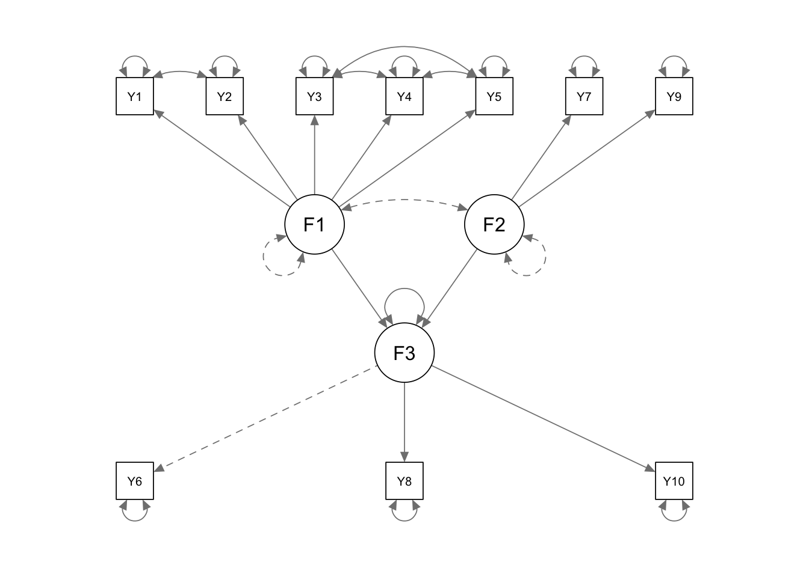
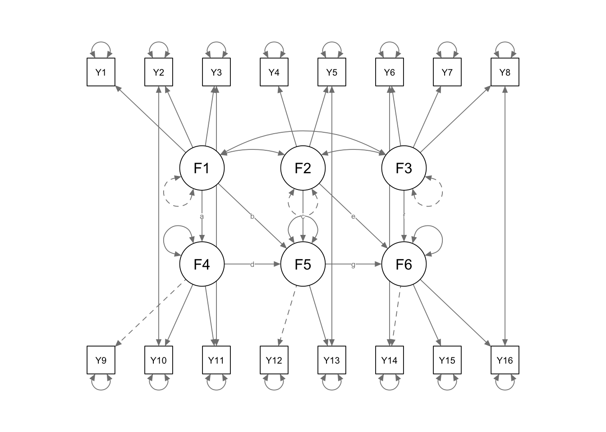

library(lavaan); library(semPlot)5 Full Structural Equation Models
5.1 Syntax - R
5.1.1 One-step SEM
JOBENR.corr <- '
1.00
.71 1.00
.62 .66 1.00
.44 .50 .71 1.00
.59 .70 .68 .62 1.00
.61 .58 .60 .48 .54 1.00
-.27 -.21 -.28 -.26 -.21 -.47 1.00
.53 .50 .40 .37 .39 .67 -.36 1.00
-.16 -.15 -.21 -.20 -.14 -.31 .65 -.17 1.00
.58 .58 .54 .50 .56 .78 -.44 .60 -.33 1.00'
JOBENR.SDs <- c(1.00, .92, .87, .85, .99, .99, 1.23, .98, 1.08, .98)
SEM.management.cov <- getCov(JOBENR.corr, sds = JOBENR.SDs, names = paste("Y", 1:10, sep=""))Warning: 'getCov' is deprecated.
Use 'lav_getcov' instead.
See help("Deprecated")SEM.management.model <-
paste0('F1 =~ NA*Y1 + ', paste0('Y', 2:5, collapse=' + '), ' \n',
' F2 =~ NA*Y7 + Y9', ' \n',
' F3 =~ Y6 + Y8 + Y10', ' \n',
' F1 ~~ 1*F1', ' \n',
' F2 ~~ 1*F2', ' \n',
' Y1 ~~ Y2', ' \n',
' Y3 ~~ Y4', ' \n',
' Y3 ~~ Y5', ' \n',
' Y4 ~~ Y5', ' \n',
' F3 ~ F1 + F2', ' \n',
'F1 ~~ 0*F2')
SEM.management.fit <- sem(SEM.management.model, sample.cov = SEM.management.cov, sample.nobs = 114)
summary(SEM.management.fit, fit.measures = TRUE, standardized = TRUE, rsquare = TRUE)lavaan 0.6-21 ended normally after 39 iterations
Estimator ML
Optimization method NLMINB
Number of model parameters 26
Number of observations 114
Model Test User Model:
Test statistic 32.232
Degrees of freedom 29
P-value (Chi-square) 0.310
Model Test Baseline Model:
Test statistic 713.751
Degrees of freedom 45
P-value 0.000
User Model versus Baseline Model:
Comparative Fit Index (CFI) 0.995
Tucker-Lewis Index (TLI) 0.992
Loglikelihood and Information Criteria:
Loglikelihood user model (H0) -1253.375
Loglikelihood unrestricted model (H1) -1237.259
Akaike (AIC) 2558.751
Bayesian (BIC) 2629.892
Sample-size adjusted Bayesian (SABIC) 2547.715
Root Mean Square Error of Approximation:
RMSEA 0.031
90 Percent confidence interval - lower 0.000
90 Percent confidence interval - upper 0.080
P-value H_0: RMSEA <= 0.050 0.680
P-value H_0: RMSEA >= 0.080 0.052
Standardized Root Mean Square Residual:
SRMR 0.114
Parameter Estimates:
Standard errors Standard
Information Expected
Information saturated (h1) model Structured
Latent Variables:
Estimate Std.Err z-value P(>|z|) Std.lv Std.all
F1 =~
Y1 0.803 0.085 9.444 0.000 0.803 0.806
Y2 0.797 0.075 10.670 0.000 0.797 0.870
Y3 0.664 0.074 9.018 0.000 0.664 0.766
Y4 0.493 0.078 6.319 0.000 0.493 0.582
Y5 0.765 0.083 9.185 0.000 0.765 0.776
F2 =~
Y7 1.216 0.155 7.843 0.000 1.216 0.993
Y9 0.704 0.117 5.992 0.000 0.704 0.654
F3 =~
Y6 1.000 0.844 0.902
Y8 0.783 0.091 8.594 0.000 0.661 0.699
Y10 0.929 0.082 11.295 0.000 0.784 0.841
Regressions:
Estimate Std.Err z-value P(>|z|) Std.lv Std.all
F3 ~
F1 0.624 0.074 8.387 0.000 0.739 0.739
F2 -0.305 0.070 -4.381 0.000 -0.362 -0.362
Covariances:
Estimate Std.Err z-value P(>|z|) Std.lv Std.all
.Y1 ~~
.Y2 0.008 0.053 0.144 0.886 0.008 0.029
.Y3 ~~
.Y4 0.194 0.050 3.857 0.000 0.194 0.505
.Y5 0.073 0.050 1.473 0.141 0.073 0.211
.Y4 ~~
.Y5 0.140 0.054 2.617 0.009 0.140 0.328
F1 ~~
F2 0.000 0.000 0.000
Variances:
Estimate Std.Err z-value P(>|z|) Std.lv Std.all
F1 1.000 1.000 1.000
F2 1.000 1.000 1.000
.Y1 0.347 0.075 4.629 0.000 0.347 0.350
.Y2 0.204 0.057 3.555 0.000 0.204 0.243
.Y3 0.310 0.055 5.628 0.000 0.310 0.413
.Y4 0.473 0.069 6.856 0.000 0.473 0.661
.Y5 0.386 0.070 5.513 0.000 0.386 0.398
.Y7 0.020 0.321 0.062 0.950 0.020 0.013
.Y9 0.661 0.139 4.772 0.000 0.661 0.572
.Y6 0.163 0.044 3.735 0.000 0.163 0.186
.Y8 0.456 0.068 6.737 0.000 0.456 0.511
.Y10 0.255 0.048 5.313 0.000 0.255 0.293
.F3 0.230 0.060 3.845 0.000 0.323 0.323
R-Square:
Estimate
Y1 0.650
Y2 0.757
Y3 0.587
Y4 0.339
Y5 0.602
Y7 0.987
Y9 0.428
Y6 0.814
Y8 0.489
Y10 0.707
F3 0.677semPaths(SEM.management.fit)
5.1.2 Two-step SEM process
5.1.2.1 measurement phase
DANDS.lower <- '
6.052
3.516 3.098
5.52 3.626 7.508
1.676 1.235 1.274 4.162
0.927 0.352 0.823 1.577 4.537
3.84 2.899 4.56 2.114 2.5 18.49
1.117 0.863 1.432 1.109 1.574 3.636 3.61
1.136 0.98 1.218 0.45 0.389 1.814 1.242 3.61
4.348 2.851 4.475 1.486 0.767 5.18 1.574 1.229 6.917
2.157 2.062 2.662 0.821 0.696 3.495 1.39 0.474 3.38 3.572
4.276 3.199 5.595 1.112 0.544 6.216 1.813 1.241 6.117 3.628 8.066
1.905 1.61 1.988 2.077 1.311 4.115 1.325 1.138 2.745 1.747 2.731 5.476
1.167 0.855 1.779 1.477 3.244 4.129 1.441 1.061 1.839 1.15 1.805 3.044 5.153
3.563 3.062 4.807 1.695 2.402 16.53 2.641 0.526 5.535 3.555 6.584 4.424 4.909 23.62
2.022 1.419 2.777 0.716 1.739 7.286 2.32 1.349 3.274 2.041 3.46 3.448 3.104 7.123 7.076
0.267 0.294 0.489 0.356 0.831 1.026 0.91 1.485 0.898 0.279 0.722 1.444 0.938 0.528 1.765 3.764'
SEM.2step.cov <- getCov(DANDS.lower, names = paste("Y", 1:16, sep=""))
SEM.2step.initial.measurement.model <- '
F1 =~ NA*Y1 + Y2 +Y3
F2 =~ NA*Y4 + Y5
F3 =~ NA*Y6 + Y7 + Y8
F4 =~ Y9 + Y10 + Y11
F5 =~ Y12 + Y13
F6 =~ Y14 + Y15 + Y16
F1 ~~ 1*F1
F2 ~~ 1*F2
F3 ~~ 1*F3'
SEM.2step.initial.measurement.fit <- cfa(SEM.2step.initial.measurement.model, sample.cov = SEM.2step.cov, sample.nobs = 84)Warning: lavaan->lav_object_post_check():
covariance matrix of latent variables is not positive definite ; use
lavInspect(fit, "cov.lv") to investigate.summary(SEM.2step.initial.measurement.fit, fit.measures = TRUE, standardized = TRUE, rsquare = TRUE)lavaan 0.6-21 ended normally after 101 iterations
Estimator ML
Optimization method NLMINB
Number of model parameters 47
Number of observations 84
Model Test User Model:
Test statistic 182.555
Degrees of freedom 89
P-value (Chi-square) 0.000
Model Test Baseline Model:
Test statistic 904.019
Degrees of freedom 120
P-value 0.000
User Model versus Baseline Model:
Comparative Fit Index (CFI) 0.881
Tucker-Lewis Index (TLI) 0.839
Loglikelihood and Information Criteria:
Loglikelihood user model (H0) -2733.133
Loglikelihood unrestricted model (H1) -2641.855
Akaike (AIC) 5560.265
Bayesian (BIC) 5674.513
Sample-size adjusted Bayesian (SABIC) 5526.251
Root Mean Square Error of Approximation:
RMSEA 0.112
90 Percent confidence interval - lower 0.089
90 Percent confidence interval - upper 0.135
P-value H_0: RMSEA <= 0.050 0.000
P-value H_0: RMSEA >= 0.080 0.986
Standardized Root Mean Square Residual:
SRMR 0.090
Parameter Estimates:
Standard errors Standard
Information Expected
Information saturated (h1) model Structured
Latent Variables:
Estimate Std.Err z-value P(>|z|) Std.lv Std.all
F1 =~
Y1 2.254 0.207 10.872 0.000 2.254 0.922
Y2 1.525 0.154 9.921 0.000 1.525 0.872
Y3 2.408 0.237 10.147 0.000 2.408 0.884
F2 =~
Y4 1.000 0.233 4.284 0.000 1.000 0.493
Y5 1.558 0.258 6.029 0.000 1.558 0.736
F3 =~
Y6 3.810 0.421 9.040 0.000 3.810 0.891
Y7 0.970 0.201 4.826 0.000 0.970 0.513
Y8 0.474 0.213 2.229 0.026 0.474 0.251
F4 =~
Y9 1.000 2.345 0.897
Y10 0.598 0.071 8.468 0.000 1.401 0.746
Y11 1.101 0.091 12.161 0.000 2.581 0.914
F5 =~
Y12 1.000 1.520 0.653
Y13 1.302 0.212 6.140 0.000 1.979 0.877
F6 =~
Y14 1.000 3.721 0.770
Y15 0.514 0.070 7.318 0.000 1.913 0.723
Y16 0.110 0.056 1.984 0.047 0.411 0.213
Covariances:
Estimate Std.Err z-value P(>|z|) Std.lv Std.all
F1 ~~
F2 0.320 0.138 2.310 0.021 0.320 0.320
F3 0.486 0.103 4.708 0.000 0.486 0.486
F4 1.859 0.248 7.494 0.000 0.793 0.793
F5 0.529 0.200 2.642 0.008 0.348 0.348
F6 1.822 0.485 3.754 0.000 0.490 0.490
F2 ~~
F3 0.498 0.140 3.559 0.000 0.498 0.498
F4 0.602 0.344 1.749 0.080 0.257 0.257
F5 1.411 0.287 4.907 0.000 0.928 0.928
F6 1.787 0.613 2.916 0.004 0.480 0.480
F3 ~~
F4 1.463 0.283 5.165 0.000 0.624 0.624
F5 0.907 0.228 3.984 0.000 0.597 0.597
F6 3.953 0.492 8.031 0.000 1.062 1.062
F4 ~~
F5 1.563 0.533 2.933 0.003 0.439 0.439
F6 5.945 1.414 4.206 0.000 0.681 0.681
F5 ~~
F6 4.382 1.137 3.854 0.000 0.775 0.775
Variances:
Estimate Std.Err z-value P(>|z|) Std.lv Std.all
F1 1.000 1.000 1.000
F2 1.000 1.000 1.000
F3 1.000 1.000 1.000
.Y1 0.899 0.247 3.646 0.000 0.899 0.150
.Y2 0.734 0.150 4.881 0.000 0.734 0.240
.Y3 1.619 0.348 4.652 0.000 1.619 0.218
.Y4 3.113 0.526 5.918 0.000 3.113 0.757
.Y5 2.055 0.609 3.371 0.001 2.055 0.458
.Y6 3.754 1.742 2.155 0.031 3.754 0.205
.Y7 2.627 0.421 6.235 0.000 2.627 0.736
.Y8 3.342 0.519 6.436 0.000 3.342 0.937
.Y9 1.337 0.325 4.119 0.000 1.337 0.196
.Y10 1.566 0.269 5.817 0.000 1.566 0.444
.Y11 1.307 0.361 3.618 0.000 1.307 0.164
.Y12 3.101 0.540 5.741 0.000 3.101 0.573
.Y13 1.176 0.462 2.545 0.011 1.176 0.231
.Y14 9.492 1.845 5.145 0.000 9.492 0.407
.Y15 3.333 0.593 5.616 0.000 3.333 0.477
.Y16 3.550 0.548 6.484 0.000 3.550 0.955
F4 5.498 1.064 5.166 0.000 1.000 1.000
F5 2.310 0.729 3.170 0.002 1.000 1.000
F6 13.847 3.476 3.984 0.000 1.000 1.000
R-Square:
Estimate
Y1 0.850
Y2 0.760
Y3 0.782
Y4 0.243
Y5 0.542
Y6 0.795
Y7 0.264
Y8 0.063
Y9 0.804
Y10 0.556
Y11 0.836
Y12 0.427
Y13 0.769
Y14 0.593
Y15 0.523
Y16 0.045MI <- modindices(SEM.2step.initial.measurement.fit)Warning: lavaan->lav_start_check_cov():
starting values imply a correlation larger than 1; variables involved are:
F3 F6smaller.MI <- subset(MI, mi >= 3.84)
smaller.MI lhs op rhs mi epc sepc.lv sepc.all sepc.nox
19 F3 ~~ F3 10.050 -0.507 -1.000 -1.000 -1.000
54 F1 =~ Y4 4.965 0.536 0.536 0.264 0.264
55 F1 =~ Y5 4.783 -0.808 -0.808 -0.381 -0.381
62 F1 =~ Y12 5.071 0.547 0.547 0.235 0.235
63 F1 =~ Y13 5.101 -0.714 -0.714 -0.316 -0.316
70 F2 =~ Y6 4.694 -1.262 -1.262 -0.295 -0.295
76 F2 =~ Y12 5.074 -1.509 -1.509 -0.649 -0.649
90 F3 =~ Y13 11.032 -1.665 -1.665 -0.738 -0.738
91 F3 =~ Y14 5.288 2.325 2.325 0.481 0.481
94 F4 =~ Y1 4.837 -0.288 -0.675 -0.276 -0.276
102 F4 =~ Y12 8.416 0.320 0.749 0.322 0.322
103 F4 =~ Y13 8.706 -0.423 -0.991 -0.439 -0.439
132 F6 =~ Y12 5.926 0.253 0.942 0.405 0.405
133 F6 =~ Y13 11.778 -0.493 -1.833 -0.812 -0.812
141 Y1 ~~ Y9 11.880 0.652 0.652 0.595 0.595
142 Y1 ~~ Y10 5.623 -0.413 -0.413 -0.348 -0.348
143 Y1 ~~ Y11 6.912 -0.523 -0.523 -0.483 -0.483
156 Y2 ~~ Y10 11.050 0.462 0.462 0.431 0.431
168 Y3 ~~ Y9 6.384 -0.570 -0.570 -0.387 -0.387
170 Y3 ~~ Y11 12.585 0.839 0.839 0.577 0.577
183 Y4 ~~ Y12 8.591 1.177 1.177 0.379 0.379
184 Y4 ~~ Y13 9.399 -1.324 -1.324 -0.692 -0.692
189 Y5 ~~ Y7 4.772 0.652 0.652 0.281 0.281
194 Y5 ~~ Y12 19.258 -1.973 -1.973 -0.782 -0.782
195 Y5 ~~ Y13 21.558 2.376 2.376 1.528 1.528
199 Y6 ~~ Y7 4.655 -2.193 -2.193 -0.698 -0.698
206 Y6 ~~ Y14 28.717 6.508 6.508 1.090 1.090
209 Y7 ~~ Y8 5.098 0.757 0.757 0.256 0.256
215 Y7 ~~ Y14 5.504 -1.525 -1.525 -0.305 -0.305
223 Y8 ~~ Y14 9.082 -2.069 -2.069 -0.367 -0.367
225 Y8 ~~ Y16 11.007 1.257 1.257 0.365 0.365
251 Y14 ~~ Y15 6.442 -3.986 -3.986 -0.709 -0.709
252 Y14 ~~ Y16 4.936 -1.580 -1.580 -0.272 -0.272
253 Y15 ~~ Y16 5.433 0.952 0.952 0.277 0.277SEM.2step.measurement.model2.fit <- update(SEM.2step.initial.measurement.fit, model = c(SEM.2step.initial.measurement.model,
'Y6 ~~ Y14'))Warning: lavaan->lav_object_post_check():
covariance matrix of latent variables is not positive definite ; use
lavInspect(fit, "cov.lv") to investigate.summary(SEM.2step.measurement.model2.fit, fit.measures = TRUE, standardized = TRUE, rsquare = TRUE, modindices = TRUE)lavaan 0.6-21 ended normally after 102 iterations
Estimator ML
Optimization method NLMINB
Number of model parameters 48
Number of observations 84
Model Test User Model:
Test statistic 158.511
Degrees of freedom 88
P-value (Chi-square) 0.000
Model Test Baseline Model:
Test statistic 904.019
Degrees of freedom 120
P-value 0.000
User Model versus Baseline Model:
Comparative Fit Index (CFI) 0.910
Tucker-Lewis Index (TLI) 0.877
Loglikelihood and Information Criteria:
Loglikelihood user model (H0) -2721.110
Loglikelihood unrestricted model (H1) -2641.855
Akaike (AIC) 5538.221
Bayesian (BIC) 5654.900
Sample-size adjusted Bayesian (SABIC) 5503.483
Root Mean Square Error of Approximation:
RMSEA 0.098
90 Percent confidence interval - lower 0.073
90 Percent confidence interval - upper 0.122
P-value H_0: RMSEA <= 0.050 0.002
P-value H_0: RMSEA >= 0.080 0.885
Standardized Root Mean Square Residual:
SRMR 0.077
Parameter Estimates:
Standard errors Standard
Information Expected
Information saturated (h1) model Structured
Latent Variables:
Estimate Std.Err z-value P(>|z|) Std.lv Std.all
F1 =~
Y1 2.256 0.207 10.884 0.000 2.256 0.922
Y2 1.525 0.154 9.922 0.000 1.525 0.872
Y3 2.407 0.237 10.136 0.000 2.407 0.884
F2 =~
Y4 1.024 0.234 4.369 0.000 1.024 0.505
Y5 1.522 0.258 5.905 0.000 1.522 0.719
F3 =~
Y6 3.307 0.438 7.557 0.000 3.307 0.771
Y7 1.201 0.203 5.923 0.000 1.201 0.636
Y8 0.761 0.217 3.504 0.000 0.761 0.403
F4 =~
Y9 1.000 2.353 0.900
Y10 0.596 0.070 8.511 0.000 1.403 0.747
Y11 1.093 0.090 12.145 0.000 2.571 0.911
F5 =~
Y12 1.000 1.563 0.672
Y13 1.231 0.193 6.371 0.000 1.924 0.853
F6 =~
Y14 1.000 2.972 0.620
Y15 0.745 0.133 5.606 0.000 2.215 0.838
Y16 0.230 0.080 2.887 0.004 0.683 0.354
Covariances:
Estimate Std.Err z-value P(>|z|) Std.lv Std.all
.Y6 ~~
.Y14 7.300 1.774 4.116 0.000 7.300 0.711
F1 ~~
F2 0.333 0.139 2.389 0.017 0.333 0.333
F3 0.482 0.106 4.565 0.000 0.482 0.482
F4 1.865 0.248 7.520 0.000 0.793 0.793
F5 0.571 0.207 2.758 0.006 0.365 0.365
F6 1.376 0.417 3.300 0.001 0.463 0.463
F2 ~~
F3 0.568 0.140 4.063 0.000 0.568 0.568
F4 0.632 0.349 1.809 0.070 0.269 0.269
F5 1.471 0.289 5.091 0.000 0.941 0.941
F6 1.521 0.519 2.930 0.003 0.512 0.512
F3 ~~
F4 1.445 0.286 5.057 0.000 0.614 0.614
F5 1.016 0.235 4.314 0.000 0.650 0.650
F6 2.713 0.524 5.173 0.000 0.913 0.913
F4 ~~
F5 1.700 0.556 3.057 0.002 0.462 0.462
F6 4.526 1.237 3.658 0.000 0.647 0.647
F5 ~~
F6 3.740 1.037 3.606 0.000 0.805 0.805
Variances:
Estimate Std.Err z-value P(>|z|) Std.lv Std.all
F1 1.000 1.000 1.000
F2 1.000 1.000 1.000
F3 1.000 1.000 1.000
.Y1 0.892 0.246 3.627 0.000 0.892 0.149
.Y2 0.734 0.150 4.882 0.000 0.734 0.240
.Y3 1.627 0.349 4.666 0.000 1.627 0.219
.Y4 3.065 0.524 5.849 0.000 3.065 0.745
.Y5 2.165 0.601 3.604 0.000 2.165 0.483
.Y6 7.472 1.822 4.101 0.000 7.472 0.406
.Y7 2.125 0.386 5.502 0.000 2.125 0.596
.Y8 2.988 0.481 6.210 0.000 2.988 0.838
.Y9 1.297 0.323 4.020 0.000 1.297 0.190
.Y10 1.561 0.269 5.809 0.000 1.561 0.442
.Y11 1.359 0.366 3.717 0.000 1.359 0.170
.Y12 2.967 0.525 5.647 0.000 2.967 0.548
.Y13 1.389 0.446 3.118 0.002 1.389 0.273
.Y14 14.125 2.455 5.753 0.000 14.125 0.615
.Y15 2.086 0.646 3.228 0.001 2.086 0.298
.Y16 3.253 0.514 6.330 0.000 3.253 0.875
F4 5.538 1.066 5.195 0.000 1.000 1.000
F5 2.444 0.744 3.283 0.001 1.000 1.000
F6 8.832 2.999 2.945 0.003 1.000 1.000
R-Square:
Estimate
Y1 0.851
Y2 0.760
Y3 0.781
Y4 0.255
Y5 0.517
Y6 0.594
Y7 0.404
Y8 0.162
Y9 0.810
Y10 0.558
Y11 0.830
Y12 0.452
Y13 0.727
Y14 0.385
Y15 0.702
Y16 0.125
Modification Indices:
lhs op rhs mi epc sepc.lv sepc.all sepc.nox
1 F1 =~ Y4 4.735 0.533 0.533 0.263 0.263
2 F1 =~ Y5 4.735 -0.793 -0.793 -0.375 -0.375
3 F1 =~ Y6 0.063 -0.145 -0.145 -0.034 -0.034
4 F1 =~ Y7 0.084 -0.066 -0.066 -0.035 -0.035
5 F1 =~ Y8 0.889 0.229 0.229 0.121 0.121
6 F1 =~ Y9 0.016 0.047 0.047 0.018 0.018
7 F1 =~ Y10 0.078 -0.080 -0.080 -0.043 -0.043
8 F1 =~ Y11 0.007 0.034 0.034 0.012 0.012
9 F1 =~ Y12 4.406 0.519 0.519 0.223 0.223
10 F1 =~ Y13 4.406 -0.639 -0.639 -0.283 -0.283
11 F1 =~ Y14 1.902 0.726 0.726 0.152 0.152
12 F1 =~ Y15 0.776 -0.328 -0.328 -0.124 -0.124
13 F1 =~ Y16 0.831 -0.223 -0.223 -0.116 -0.116
14 F2 =~ Y1 0.002 0.006 0.006 0.003 0.003
15 F2 =~ Y2 0.006 -0.010 -0.010 -0.006 -0.006
16 F2 =~ Y3 0.001 0.006 0.006 0.002 0.002
17 F2 =~ Y6 1.186 -0.709 -0.709 -0.165 -0.165
18 F2 =~ Y7 0.748 0.223 0.223 0.118 0.118
19 F2 =~ Y8 0.298 0.151 0.151 0.080 0.080
20 F2 =~ Y9 0.211 0.090 0.090 0.034 0.034
21 F2 =~ Y10 0.606 0.133 0.133 0.071 0.071
22 F2 =~ Y11 0.957 -0.206 -0.206 -0.073 -0.073
23 F2 =~ Y12 4.068 -1.256 -1.256 -0.540 -0.540
24 F2 =~ Y13 4.068 1.547 1.547 0.685 0.685
25 F2 =~ Y14 0.597 0.523 0.523 0.109 0.109
26 F2 =~ Y15 0.935 -0.470 -0.470 -0.178 -0.178
27 F2 =~ Y16 0.197 0.132 0.132 0.069 0.069
28 F3 =~ Y1 0.924 -0.183 -0.183 -0.075 -0.075
29 F3 =~ Y2 0.027 0.024 0.024 0.014 0.014
30 F3 =~ Y3 0.792 0.197 0.197 0.072 0.072
31 F3 =~ Y4 0.084 0.091 0.091 0.045 0.045
32 F3 =~ Y5 0.084 -0.136 -0.136 -0.064 -0.064
33 F3 =~ Y9 0.100 -0.082 -0.082 -0.031 -0.031
34 F3 =~ Y10 0.695 0.186 0.186 0.099 0.099
35 F3 =~ Y11 0.066 -0.071 -0.071 -0.025 -0.025
36 F3 =~ Y12 4.826 0.856 0.856 0.368 0.368
37 F3 =~ Y13 4.826 -1.054 -1.054 -0.467 -0.467
38 F3 =~ Y14 0.195 -0.806 -0.806 -0.168 -0.168
39 F3 =~ Y15 0.072 0.327 0.327 0.124 0.124
40 F3 =~ Y16 0.059 0.173 0.173 0.090 0.090
41 F4 =~ Y1 4.580 -0.279 -0.657 -0.269 -0.269
42 F4 =~ Y2 0.493 0.066 0.156 0.089 0.089
43 F4 =~ Y3 2.424 0.227 0.535 0.196 0.196
44 F4 =~ Y4 2.490 0.163 0.383 0.189 0.189
45 F4 =~ Y5 2.490 -0.242 -0.570 -0.269 -0.269
46 F4 =~ Y6 0.038 0.058 0.137 0.032 0.032
47 F4 =~ Y7 0.136 -0.043 -0.101 -0.053 -0.053
48 F4 =~ Y8 0.066 0.031 0.073 0.038 0.038
49 F4 =~ Y12 7.674 0.311 0.732 0.315 0.315
50 F4 =~ Y13 7.674 -0.383 -0.901 -0.399 -0.399
51 F4 =~ Y14 2.824 0.469 1.104 0.230 0.230
52 F4 =~ Y15 1.288 -0.225 -0.529 -0.200 -0.200
53 F4 =~ Y16 0.932 -0.122 -0.288 -0.149 -0.149
54 F5 =~ Y1 0.522 -0.077 -0.121 -0.049 -0.049
55 F5 =~ Y2 0.000 0.000 0.000 0.000 0.000
56 F5 =~ Y3 0.627 0.099 0.155 0.057 0.057
57 F5 =~ Y4 0.869 -0.339 -0.530 -0.261 -0.261
58 F5 =~ Y5 0.869 0.504 0.788 0.372 0.372
59 F5 =~ Y6 0.379 -0.343 -0.537 -0.125 -0.125
60 F5 =~ Y7 0.596 0.165 0.258 0.137 0.137
61 F5 =~ Y8 0.036 -0.039 -0.062 -0.033 -0.033
62 F5 =~ Y9 0.372 0.080 0.125 0.048 0.048
63 F5 =~ Y10 0.494 0.082 0.128 0.068 0.068
64 F5 =~ Y11 1.146 -0.152 -0.237 -0.084 -0.084
65 F5 =~ Y14 1.146 0.614 0.960 0.200 0.200
66 F5 =~ Y15 1.553 -0.501 -0.783 -0.296 -0.296
67 F5 =~ Y16 0.243 0.126 0.196 0.102 0.102
68 F6 =~ Y1 2.575 -0.098 -0.292 -0.120 -0.120
69 F6 =~ Y2 0.086 0.014 0.041 0.023 0.023
70 F6 =~ Y3 2.148 0.105 0.311 0.114 0.114
71 F6 =~ Y4 0.039 -0.022 -0.065 -0.032 -0.032
72 F6 =~ Y5 0.039 0.032 0.096 0.046 0.046
73 F6 =~ Y6 2.194 0.998 2.967 0.692 0.692
74 F6 =~ Y7 2.552 -0.400 -1.189 -0.629 -0.629
75 F6 =~ Y8 0.015 0.028 0.084 0.044 0.044
76 F6 =~ Y9 0.007 -0.007 -0.022 -0.008 -0.008
77 F6 =~ Y10 0.327 0.043 0.128 0.068 0.068
78 F6 =~ Y11 0.093 -0.029 -0.085 -0.030 -0.030
79 F6 =~ Y12 8.068 0.413 1.228 0.528 0.528
80 F6 =~ Y13 8.068 -0.509 -1.512 -0.670 -0.670
81 Y1 ~~ Y2 0.948 0.222 0.222 0.275 0.275
82 Y1 ~~ Y3 0.304 0.202 0.202 0.168 0.168
83 Y1 ~~ Y4 1.290 0.273 0.273 0.165 0.165
84 Y1 ~~ Y5 1.272 0.254 0.254 0.183 0.183
85 Y1 ~~ Y6 0.232 0.152 0.152 0.059 0.059
86 Y1 ~~ Y7 0.346 -0.121 -0.121 -0.088 -0.088
87 Y1 ~~ Y8 0.030 0.040 0.040 0.024 0.024
88 Y1 ~~ Y9 11.744 0.646 0.646 0.600 0.600
89 Y1 ~~ Y10 5.943 -0.424 -0.424 -0.359 -0.359
90 Y1 ~~ Y11 6.961 -0.529 -0.529 -0.480 -0.480
91 Y1 ~~ Y12 0.007 -0.020 -0.020 -0.012 -0.012
92 Y1 ~~ Y13 1.389 -0.234 -0.234 -0.210 -0.210
93 Y1 ~~ Y14 0.716 -0.324 -0.324 -0.091 -0.091
94 Y1 ~~ Y15 0.070 0.064 0.064 0.047 0.047
95 Y1 ~~ Y16 0.173 -0.099 -0.099 -0.058 -0.058
96 Y2 ~~ Y3 2.116 -0.340 -0.340 -0.311 -0.311
97 Y2 ~~ Y4 2.284 0.289 0.289 0.193 0.193
98 Y2 ~~ Y5 2.895 -0.299 -0.299 -0.237 -0.237
99 Y2 ~~ Y6 0.026 -0.040 -0.040 -0.017 -0.017
100 Y2 ~~ Y7 0.004 0.010 0.010 0.008 0.008
101 Y2 ~~ Y8 1.824 0.251 0.251 0.169 0.169
102 Y2 ~~ Y9 1.767 -0.197 -0.197 -0.202 -0.202
103 Y2 ~~ Y10 11.284 0.467 0.467 0.436 0.436
104 Y2 ~~ Y11 0.106 -0.051 -0.051 -0.051 -0.051
105 Y2 ~~ Y12 3.797 0.376 0.376 0.254 0.254
106 Y2 ~~ Y13 0.478 -0.108 -0.108 -0.107 -0.107
107 Y2 ~~ Y14 0.539 0.222 0.222 0.069 0.069
108 Y2 ~~ Y15 1.370 -0.220 -0.220 -0.178 -0.178
109 Y2 ~~ Y16 0.011 0.020 0.020 0.013 0.013
110 Y3 ~~ Y4 2.840 -0.489 -0.489 -0.219 -0.219
111 Y3 ~~ Y5 0.071 -0.071 -0.071 -0.038 -0.038
112 Y3 ~~ Y6 0.175 -0.157 -0.157 -0.045 -0.045
113 Y3 ~~ Y7 0.001 0.009 0.009 0.005 0.005
114 Y3 ~~ Y8 0.121 -0.098 -0.098 -0.044 -0.044
115 Y3 ~~ Y9 6.610 -0.578 -0.578 -0.398 -0.398
116 Y3 ~~ Y10 0.765 -0.184 -0.184 -0.116 -0.116
117 Y3 ~~ Y11 12.478 0.843 0.843 0.567 0.567
118 Y3 ~~ Y12 1.672 -0.378 -0.378 -0.172 -0.172
119 Y3 ~~ Y13 2.760 0.393 0.393 0.261 0.261
120 Y3 ~~ Y14 0.148 0.176 0.176 0.037 0.037
121 Y3 ~~ Y15 0.731 0.244 0.244 0.133 0.133
122 Y3 ~~ Y16 0.010 -0.029 -0.029 -0.013 -0.013
123 Y4 ~~ Y6 0.019 0.069 0.069 0.014 0.014
124 Y4 ~~ Y7 1.180 0.338 0.338 0.132 0.132
125 Y4 ~~ Y8 0.092 -0.106 -0.106 -0.035 -0.035
126 Y4 ~~ Y9 1.747 0.365 0.365 0.183 0.183
127 Y4 ~~ Y10 0.001 0.007 0.007 0.003 0.003
128 Y4 ~~ Y11 0.690 -0.244 -0.244 -0.119 -0.119
129 Y4 ~~ Y12 7.966 1.140 1.140 0.378 0.378
130 Y4 ~~ Y13 7.452 -1.167 -1.167 -0.565 -0.565
131 Y4 ~~ Y14 0.005 0.044 0.044 0.007 0.007
132 Y4 ~~ Y15 3.009 -0.646 -0.646 -0.256 -0.256
133 Y4 ~~ Y16 0.023 -0.055 -0.055 -0.017 -0.017
134 Y5 ~~ Y6 2.178 -0.873 -0.873 -0.217 -0.217
135 Y5 ~~ Y7 4.724 0.636 0.636 0.296 0.296
136 Y5 ~~ Y8 2.309 -0.483 -0.483 -0.190 -0.190
137 Y5 ~~ Y9 0.001 0.010 0.010 0.006 0.006
138 Y5 ~~ Y10 0.702 0.198 0.198 0.108 0.108
139 Y5 ~~ Y11 0.766 -0.244 -0.244 -0.142 -0.142
140 Y5 ~~ Y12 22.726 -2.133 -2.133 -0.841 -0.841
141 Y5 ~~ Y13 21.162 2.317 2.317 1.336 1.336
142 Y5 ~~ Y14 0.543 0.464 0.464 0.084 0.084
143 Y5 ~~ Y15 0.118 0.142 0.142 0.067 0.067
144 Y5 ~~ Y16 0.578 0.250 0.250 0.094 0.094
145 Y6 ~~ Y7 1.229 -0.907 -0.907 -0.228 -0.228
146 Y6 ~~ Y8 0.106 0.167 0.167 0.035 0.035
147 Y6 ~~ Y9 0.603 -0.282 -0.282 -0.091 -0.091
148 Y6 ~~ Y10 0.002 0.015 0.015 0.005 0.005
149 Y6 ~~ Y11 0.463 0.265 0.265 0.083 0.083
150 Y6 ~~ Y12 0.224 0.232 0.232 0.049 0.049
151 Y6 ~~ Y13 0.004 -0.032 -0.032 -0.010 -0.010
152 Y6 ~~ Y15 3.002 1.478 1.478 0.374 0.374
153 Y6 ~~ Y16 1.215 -0.520 -0.520 -0.105 -0.105
154 Y7 ~~ Y8 1.637 0.395 0.395 0.157 0.157
155 Y7 ~~ Y9 0.304 -0.130 -0.130 -0.078 -0.078
156 Y7 ~~ Y10 2.934 0.382 0.382 0.210 0.210
157 Y7 ~~ Y11 0.000 0.002 0.002 0.001 0.001
158 Y7 ~~ Y12 1.002 -0.312 -0.312 -0.124 -0.124
159 Y7 ~~ Y13 0.526 -0.187 -0.187 -0.109 -0.109
160 Y7 ~~ Y14 0.118 -0.225 -0.225 -0.041 -0.041
161 Y7 ~~ Y15 0.023 -0.056 -0.056 -0.027 -0.027
162 Y7 ~~ Y16 0.428 0.205 0.205 0.078 0.078
163 Y8 ~~ Y9 0.093 0.081 0.081 0.041 0.041
164 Y8 ~~ Y10 1.678 -0.326 -0.326 -0.151 -0.151
165 Y8 ~~ Y11 0.075 -0.077 -0.077 -0.038 -0.038
166 Y8 ~~ Y12 0.593 0.270 0.270 0.091 0.091
167 Y8 ~~ Y13 1.224 0.312 0.312 0.153 0.153
168 Y8 ~~ Y14 3.871 -1.146 -1.146 -0.176 -0.176
169 Y8 ~~ Y15 1.189 -0.394 -0.394 -0.158 -0.158
170 Y8 ~~ Y16 8.820 1.043 1.043 0.335 0.335
171 Y9 ~~ Y10 0.144 0.092 0.092 0.064 0.064
172 Y9 ~~ Y11 0.025 -0.078 -0.078 -0.059 -0.059
173 Y9 ~~ Y12 0.179 0.117 0.117 0.060 0.060
174 Y9 ~~ Y13 0.114 -0.078 -0.078 -0.058 -0.058
175 Y9 ~~ Y14 0.068 0.116 0.116 0.027 0.027
176 Y9 ~~ Y15 0.018 0.038 0.038 0.023 0.023
177 Y9 ~~ Y16 0.640 0.220 0.220 0.107 0.107
178 Y10 ~~ Y11 0.056 -0.062 -0.062 -0.043 -0.043
179 Y10 ~~ Y12 0.147 0.100 0.100 0.047 0.047
180 Y10 ~~ Y13 0.179 -0.089 -0.089 -0.060 -0.060
181 Y10 ~~ Y14 0.001 0.010 0.010 0.002 0.002
182 Y10 ~~ Y15 0.010 -0.025 -0.025 -0.014 -0.014
183 Y10 ~~ Y16 0.752 -0.226 -0.226 -0.100 -0.100
184 Y11 ~~ Y12 0.005 0.021 0.021 0.011 0.011
185 Y11 ~~ Y13 0.013 0.028 0.028 0.020 0.020
186 Y11 ~~ Y14 0.241 0.231 0.231 0.053 0.053
187 Y11 ~~ Y15 0.412 -0.193 -0.193 -0.114 -0.114
188 Y11 ~~ Y16 0.237 -0.142 -0.142 -0.067 -0.067
189 Y12 ~~ Y14 0.413 -0.392 -0.392 -0.061 -0.061
190 Y12 ~~ Y15 1.058 0.427 0.427 0.172 0.172
191 Y12 ~~ Y16 1.136 0.391 0.391 0.126 0.126
192 Y13 ~~ Y14 0.423 0.385 0.385 0.087 0.087
193 Y13 ~~ Y15 0.776 -0.363 -0.363 -0.213 -0.213
194 Y13 ~~ Y16 0.827 -0.273 -0.273 -0.128 -0.128
195 Y14 ~~ Y15 0.043 -0.277 -0.277 -0.051 -0.051
196 Y14 ~~ Y16 0.868 -0.533 -0.533 -0.079 -0.079
197 Y15 ~~ Y16 1.292 0.451 0.451 0.173 0.173SEM.2step.measurement.model3.fit <- update(SEM.2step.initial.measurement.fit, model = c(SEM.2step.initial.measurement.model, 'Y6 ~~ Y14',
'Y5 ~~ Y13'))
summary(SEM.2step.measurement.model3.fit, fit.measures = TRUE, standardized = TRUE, rsquare = TRUE, modindices = TRUE)lavaan 0.6-21 ended normally after 108 iterations
Estimator ML
Optimization method NLMINB
Number of model parameters 49
Number of observations 84
Model Test User Model:
Test statistic 130.357
Degrees of freedom 87
P-value (Chi-square) 0.002
Model Test Baseline Model:
Test statistic 904.019
Degrees of freedom 120
P-value 0.000
User Model versus Baseline Model:
Comparative Fit Index (CFI) 0.945
Tucker-Lewis Index (TLI) 0.924
Loglikelihood and Information Criteria:
Loglikelihood user model (H0) -2707.034
Loglikelihood unrestricted model (H1) -2641.855
Akaike (AIC) 5512.067
Bayesian (BIC) 5631.177
Sample-size adjusted Bayesian (SABIC) 5476.606
Root Mean Square Error of Approximation:
RMSEA 0.077
90 Percent confidence interval - lower 0.048
90 Percent confidence interval - upper 0.103
P-value H_0: RMSEA <= 0.050 0.062
P-value H_0: RMSEA >= 0.080 0.446
Standardized Root Mean Square Residual:
SRMR 0.073
Parameter Estimates:
Standard errors Standard
Information Expected
Information saturated (h1) model Structured
Latent Variables:
Estimate Std.Err z-value P(>|z|) Std.lv Std.all
F1 =~
Y1 2.256 0.207 10.894 0.000 2.256 0.923
Y2 1.531 0.153 9.979 0.000 1.531 0.875
Y3 2.398 0.238 10.080 0.000 2.398 0.880
F2 =~
Y4 1.728 0.321 5.377 0.000 1.728 0.852
Y5 0.887 0.245 3.627 0.000 0.887 0.420
F3 =~
Y6 3.275 0.435 7.522 0.000 3.275 0.768
Y7 1.175 0.204 5.774 0.000 1.175 0.622
Y8 0.759 0.217 3.500 0.000 0.759 0.402
F4 =~
Y9 1.000 2.359 0.902
Y10 0.596 0.070 8.560 0.000 1.407 0.749
Y11 1.087 0.090 12.108 0.000 2.563 0.908
F5 =~
Y12 1.000 2.028 0.872
Y13 0.699 0.113 6.175 0.000 1.418 0.647
F6 =~
Y14 1.000 2.878 0.601
Y15 0.796 0.148 5.392 0.000 2.290 0.866
Y16 0.247 0.083 2.963 0.003 0.710 0.368
Covariances:
Estimate Std.Err z-value P(>|z|) Std.lv Std.all
.Y6 ~~
.Y14 7.508 1.797 4.178 0.000 7.508 0.720
.Y5 ~~
.Y13 2.196 0.460 4.775 0.000 2.196 0.686
F1 ~~
F2 0.402 0.124 3.235 0.001 0.402 0.402
F3 0.477 0.106 4.504 0.000 0.477 0.477
F4 1.869 0.248 7.535 0.000 0.793 0.793
F5 0.873 0.248 3.528 0.000 0.430 0.430
F6 1.287 0.404 3.184 0.001 0.447 0.447
F2 ~~
F3 0.398 0.137 2.904 0.004 0.398 0.398
F4 0.736 0.319 2.308 0.021 0.312 0.312
F5 1.214 0.302 4.015 0.000 0.599 0.599
F6 0.783 0.432 1.815 0.070 0.272 0.272
F3 ~~
F4 1.431 0.287 4.995 0.000 0.607 0.607
F5 1.231 0.263 4.680 0.000 0.607 0.607
F6 2.600 0.528 4.926 0.000 0.903 0.903
F4 ~~
F5 2.583 0.687 3.762 0.000 0.540 0.540
F6 4.258 1.204 3.537 0.000 0.627 0.627
F5 ~~
F6 4.357 1.159 3.760 0.000 0.747 0.747
Variances:
Estimate Std.Err z-value P(>|z|) Std.lv Std.all
F1 1.000 1.000 1.000
F2 1.000 1.000 1.000
F3 1.000 1.000 1.000
.Y1 0.889 0.245 3.633 0.000 0.889 0.149
.Y2 0.718 0.148 4.840 0.000 0.718 0.235
.Y3 1.669 0.352 4.740 0.000 1.669 0.225
.Y4 1.127 0.944 1.194 0.233 1.127 0.274
.Y5 3.682 0.625 5.890 0.000 3.682 0.824
.Y6 7.445 1.817 4.098 0.000 7.445 0.410
.Y7 2.186 0.392 5.582 0.000 2.186 0.613
.Y8 2.990 0.481 6.216 0.000 2.990 0.838
.Y9 1.272 0.322 3.954 0.000 1.272 0.186
.Y10 1.551 0.268 5.796 0.000 1.551 0.439
.Y11 1.401 0.369 3.792 0.000 1.401 0.176
.Y12 1.297 0.518 2.506 0.012 1.297 0.240
.Y13 2.786 0.503 5.534 0.000 2.786 0.581
.Y14 14.623 2.516 5.813 0.000 14.623 0.638
.Y15 1.748 0.671 2.607 0.009 1.748 0.250
.Y16 3.215 0.509 6.316 0.000 3.215 0.864
F4 5.563 1.067 5.213 0.000 1.000 1.000
F5 4.114 0.941 4.373 0.000 1.000 1.000
F6 8.282 2.921 2.836 0.005 1.000 1.000
R-Square:
Estimate
Y1 0.851
Y2 0.765
Y3 0.775
Y4 0.726
Y5 0.176
Y6 0.590
Y7 0.387
Y8 0.162
Y9 0.814
Y10 0.561
Y11 0.824
Y12 0.760
Y13 0.419
Y14 0.362
Y15 0.750
Y16 0.136
Modification Indices:
lhs op rhs mi epc sepc.lv sepc.all sepc.nox
1 F1 =~ Y4 0.007 -0.041 -0.041 -0.020 -0.020
2 F1 =~ Y5 0.007 0.021 0.021 0.010 0.010
3 F1 =~ Y6 0.186 -0.250 -0.250 -0.059 -0.059
4 F1 =~ Y7 0.015 -0.028 -0.028 -0.015 -0.015
5 F1 =~ Y8 0.950 0.235 0.235 0.124 0.124
6 F1 =~ Y9 0.009 0.034 0.034 0.013 0.013
7 F1 =~ Y10 0.098 -0.089 -0.089 -0.047 -0.047
8 F1 =~ Y11 0.022 0.059 0.059 0.021 0.021
9 F1 =~ Y12 0.050 0.069 0.069 0.030 0.030
10 F1 =~ Y13 0.050 -0.048 -0.048 -0.022 -0.022
11 F1 =~ Y14 2.741 0.852 0.852 0.178 0.178
12 F1 =~ Y15 1.198 -0.418 -0.418 -0.158 -0.158
13 F1 =~ Y16 0.830 -0.219 -0.219 -0.113 -0.113
14 F2 =~ Y1 0.612 0.142 0.142 0.058 0.058
15 F2 =~ Y2 1.106 0.146 0.146 0.083 0.083
16 F2 =~ Y3 3.619 -0.406 -0.406 -0.149 -0.149
17 F2 =~ Y6 1.782 -0.786 -0.786 -0.184 -0.184
18 F2 =~ Y7 1.933 0.323 0.323 0.171 0.171
19 F2 =~ Y8 0.017 0.033 0.033 0.017 0.017
20 F2 =~ Y9 1.131 0.215 0.215 0.082 0.082
21 F2 =~ Y10 0.295 0.097 0.097 0.051 0.051
22 F2 =~ Y11 2.019 -0.309 -0.309 -0.110 -0.110
23 F2 =~ Y12 0.009 -0.040 -0.040 -0.017 -0.017
24 F2 =~ Y13 0.009 0.028 0.028 0.013 0.013
25 F2 =~ Y14 1.348 0.600 0.600 0.125 0.125
26 F2 =~ Y15 1.679 -0.497 -0.497 -0.188 -0.188
27 F2 =~ Y16 0.192 0.107 0.107 0.055 0.055
28 F3 =~ Y1 0.914 -0.180 -0.180 -0.074 -0.074
29 F3 =~ Y2 0.053 0.033 0.033 0.019 0.019
30 F3 =~ Y3 0.685 0.183 0.183 0.067 0.067
31 F3 =~ Y4 5.630 -1.255 -1.255 -0.619 -0.619
32 F3 =~ Y5 5.630 0.644 0.644 0.305 0.305
33 F3 =~ Y9 0.109 -0.085 -0.085 -0.033 -0.033
34 F3 =~ Y10 0.528 0.160 0.160 0.085 0.085
35 F3 =~ Y11 0.030 -0.048 -0.048 -0.017 -0.017
36 F3 =~ Y12 0.001 0.012 0.012 0.005 0.005
37 F3 =~ Y13 0.001 -0.008 -0.008 -0.004 -0.004
38 F3 =~ Y14 0.077 0.472 0.472 0.099 0.099
39 F3 =~ Y15 0.050 -0.265 -0.265 -0.100 -0.100
40 F3 =~ Y16 0.001 -0.023 -0.023 -0.012 -0.012
41 F4 =~ Y1 4.199 -0.266 -0.628 -0.257 -0.257
42 F4 =~ Y2 0.398 0.059 0.140 0.080 0.080
43 F4 =~ Y3 2.370 0.225 0.530 0.194 0.194
44 F4 =~ Y4 0.201 -0.087 -0.205 -0.101 -0.101
45 F4 =~ Y5 0.201 0.045 0.105 0.050 0.050
46 F4 =~ Y6 0.007 -0.025 -0.059 -0.014 -0.014
47 F4 =~ Y7 0.009 -0.011 -0.025 -0.013 -0.013
48 F4 =~ Y8 0.088 0.035 0.083 0.044 0.044
49 F4 =~ Y12 0.151 0.058 0.136 0.059 0.059
50 F4 =~ Y13 0.151 -0.040 -0.095 -0.044 -0.044
51 F4 =~ Y14 4.467 0.579 1.365 0.285 0.285
52 F4 =~ Y15 2.241 -0.307 -0.724 -0.274 -0.274
53 F4 =~ Y16 0.906 -0.117 -0.276 -0.143 -0.143
54 F5 =~ Y1 1.306 -0.100 -0.203 -0.083 -0.083
55 F5 =~ Y2 1.378 0.078 0.158 0.091 0.091
56 F5 =~ Y3 0.011 0.011 0.022 0.008 0.008
57 F5 =~ Y4 2.158 -0.520 -1.055 -0.520 -0.520
58 F5 =~ Y5 2.159 0.267 0.542 0.256 0.256
59 F5 =~ Y6 0.001 0.013 0.027 0.006 0.006
60 F5 =~ Y7 0.141 -0.057 -0.115 -0.061 -0.061
61 F5 =~ Y8 0.280 0.080 0.163 0.086 0.086
62 F5 =~ Y9 0.464 0.077 0.155 0.059 0.059
63 F5 =~ Y10 0.197 0.043 0.088 0.047 0.047
64 F5 =~ Y11 0.959 -0.119 -0.241 -0.086 -0.086
65 F5 =~ Y14 0.976 0.425 0.862 0.180 0.180
66 F5 =~ Y15 1.506 -0.394 -0.798 -0.302 -0.302
67 F5 =~ Y16 0.324 0.106 0.216 0.112 0.112
68 F6 =~ Y1 2.339 -0.095 -0.274 -0.112 -0.112
69 F6 =~ Y2 0.108 0.016 0.045 0.026 0.026
70 F6 =~ Y3 1.856 0.099 0.286 0.105 0.105
71 F6 =~ Y4 5.663 -0.424 -1.220 -0.602 -0.602
72 F6 =~ Y5 5.663 0.218 0.627 0.296 0.296
73 F6 =~ Y6 2.509 1.033 2.973 0.697 0.697
74 F6 =~ Y7 2.695 -0.396 -1.139 -0.603 -0.603
75 F6 =~ Y8 0.000 0.003 0.009 0.005 0.005
76 F6 =~ Y9 0.034 -0.016 -0.047 -0.018 -0.018
77 F6 =~ Y10 0.253 0.038 0.110 0.058 0.058
78 F6 =~ Y11 0.027 -0.016 -0.045 -0.016 -0.016
79 F6 =~ Y12 0.002 0.009 0.026 0.011 0.011
80 F6 =~ Y13 0.002 -0.006 -0.018 -0.008 -0.008
81 Y1 ~~ Y2 0.364 0.137 0.137 0.171 0.171
82 Y1 ~~ Y3 0.786 0.317 0.317 0.261 0.261
83 Y1 ~~ Y4 0.092 0.070 0.070 0.070 0.070
84 Y1 ~~ Y5 2.205 0.296 0.296 0.164 0.164
85 Y1 ~~ Y6 0.292 0.169 0.169 0.066 0.066
86 Y1 ~~ Y7 0.352 -0.122 -0.122 -0.088 -0.088
87 Y1 ~~ Y8 0.024 0.036 0.036 0.022 0.022
88 Y1 ~~ Y9 10.897 0.619 0.619 0.582 0.582
89 Y1 ~~ Y10 6.354 -0.436 -0.436 -0.372 -0.372
90 Y1 ~~ Y11 6.682 -0.520 -0.520 -0.466 -0.466
91 Y1 ~~ Y12 0.153 0.082 0.082 0.077 0.077
92 Y1 ~~ Y13 2.166 -0.263 -0.263 -0.167 -0.167
93 Y1 ~~ Y14 0.863 -0.359 -0.359 -0.099 -0.099
94 Y1 ~~ Y15 0.140 0.088 0.088 0.071 0.071
95 Y1 ~~ Y16 0.180 -0.101 -0.101 -0.060 -0.060
96 Y2 ~~ Y3 2.015 -0.327 -0.327 -0.299 -0.299
97 Y2 ~~ Y4 0.815 0.160 0.160 0.178 0.178
98 Y2 ~~ Y5 1.155 -0.169 -0.169 -0.104 -0.104
99 Y2 ~~ Y6 0.077 -0.068 -0.068 -0.029 -0.029
100 Y2 ~~ Y7 0.000 0.000 0.000 0.000 0.000
101 Y2 ~~ Y8 1.742 0.243 0.243 0.166 0.166
102 Y2 ~~ Y9 2.102 -0.213 -0.213 -0.222 -0.222
103 Y2 ~~ Y10 11.562 0.468 0.468 0.443 0.443
104 Y2 ~~ Y11 0.070 -0.041 -0.041 -0.041 -0.041
105 Y2 ~~ Y12 1.663 0.213 0.213 0.221 0.221
106 Y2 ~~ Y13 0.027 -0.023 -0.023 -0.016 -0.016
107 Y2 ~~ Y14 0.583 0.231 0.231 0.071 0.071
108 Y2 ~~ Y15 2.224 -0.274 -0.274 -0.245 -0.245
109 Y2 ~~ Y16 0.007 0.016 0.016 0.010 0.010
110 Y3 ~~ Y4 1.328 -0.315 -0.315 -0.230 -0.230
111 Y3 ~~ Y5 0.598 -0.187 -0.187 -0.076 -0.076
112 Y3 ~~ Y6 0.145 -0.143 -0.143 -0.040 -0.040
113 Y3 ~~ Y7 0.010 0.025 0.025 0.013 0.013
114 Y3 ~~ Y8 0.101 -0.090 -0.090 -0.040 -0.040
115 Y3 ~~ Y9 6.229 -0.563 -0.563 -0.387 -0.387
116 Y3 ~~ Y10 0.673 -0.173 -0.173 -0.108 -0.108
117 Y3 ~~ Y11 12.971 0.870 0.870 0.569 0.569
118 Y3 ~~ Y12 3.047 -0.444 -0.444 -0.302 -0.302
119 Y3 ~~ Y13 3.574 0.412 0.412 0.191 0.191
120 Y3 ~~ Y14 0.176 0.196 0.196 0.040 0.040
121 Y3 ~~ Y15 1.229 0.314 0.314 0.184 0.184
122 Y3 ~~ Y16 0.010 -0.029 -0.029 -0.012 -0.012
123 Y4 ~~ Y6 0.535 -0.454 -0.454 -0.157 -0.157
124 Y4 ~~ Y7 0.824 0.271 0.271 0.173 0.173
125 Y4 ~~ Y8 0.266 -0.166 -0.166 -0.091 -0.091
126 Y4 ~~ Y9 1.931 0.365 0.365 0.305 0.305
127 Y4 ~~ Y10 0.089 -0.071 -0.071 -0.054 -0.054
128 Y4 ~~ Y11 0.836 -0.258 -0.258 -0.206 -0.206
129 Y4 ~~ Y12 0.279 0.301 0.301 0.249 0.249
130 Y4 ~~ Y13 0.024 0.061 0.061 0.034 0.034
131 Y4 ~~ Y14 0.948 0.634 0.634 0.156 0.156
132 Y4 ~~ Y15 4.029 -0.897 -0.897 -0.639 -0.639
133 Y4 ~~ Y16 0.192 -0.145 -0.145 -0.076 -0.076
134 Y5 ~~ Y6 0.163 -0.170 -0.170 -0.033 -0.033
135 Y5 ~~ Y7 4.207 0.531 0.531 0.187 0.187
136 Y5 ~~ Y8 1.519 -0.355 -0.355 -0.107 -0.107
137 Y5 ~~ Y9 0.050 -0.051 -0.051 -0.023 -0.023
138 Y5 ~~ Y10 1.210 0.235 0.235 0.098 0.098
139 Y5 ~~ Y11 0.833 -0.221 -0.221 -0.097 -0.097
140 Y5 ~~ Y12 1.364 -0.583 -0.583 -0.267 -0.267
141 Y5 ~~ Y14 0.035 -0.096 -0.096 -0.013 -0.013
142 Y5 ~~ Y15 2.463 0.510 0.510 0.201 0.201
143 Y5 ~~ Y16 2.126 0.434 0.434 0.126 0.126
144 Y6 ~~ Y7 1.040 -0.822 -0.822 -0.204 -0.204
145 Y6 ~~ Y8 0.046 0.111 0.111 0.023 0.023
146 Y6 ~~ Y9 0.777 -0.319 -0.319 -0.104 -0.104
147 Y6 ~~ Y10 0.020 0.046 0.046 0.014 0.014
148 Y6 ~~ Y11 0.559 0.291 0.291 0.090 0.090
149 Y6 ~~ Y12 0.043 0.101 0.101 0.033 0.033
150 Y6 ~~ Y13 0.006 0.030 0.030 0.006 0.006
151 Y6 ~~ Y15 2.141 1.302 1.302 0.361 0.361
152 Y6 ~~ Y16 1.222 -0.516 -0.516 -0.105 -0.105
153 Y7 ~~ Y8 1.786 0.415 0.415 0.162 0.162
154 Y7 ~~ Y9 0.351 -0.140 -0.140 -0.084 -0.084
155 Y7 ~~ Y10 2.991 0.388 0.388 0.211 0.211
156 Y7 ~~ Y11 0.000 -0.002 -0.002 -0.001 -0.001
157 Y7 ~~ Y12 0.351 -0.163 -0.163 -0.097 -0.097
158 Y7 ~~ Y13 0.699 -0.195 -0.195 -0.079 -0.079
159 Y7 ~~ Y14 0.009 -0.064 -0.064 -0.011 -0.011
160 Y7 ~~ Y15 0.004 0.023 0.023 0.012 0.012
161 Y7 ~~ Y16 0.518 0.227 0.227 0.085 0.085
162 Y8 ~~ Y9 0.097 0.082 0.082 0.042 0.042
163 Y8 ~~ Y10 1.617 -0.320 -0.320 -0.148 -0.148
164 Y8 ~~ Y11 0.061 -0.070 -0.070 -0.034 -0.034
165 Y8 ~~ Y12 0.182 0.129 0.129 0.065 0.065
166 Y8 ~~ Y13 1.517 0.319 0.319 0.111 0.111
167 Y8 ~~ Y14 3.279 -1.074 -1.074 -0.162 -0.162
168 Y8 ~~ Y15 1.907 -0.501 -0.501 -0.219 -0.219
169 Y8 ~~ Y16 8.983 1.048 1.048 0.338 0.338
170 Y9 ~~ Y10 0.051 0.055 0.055 0.039 0.039
171 Y9 ~~ Y11 0.000 -0.008 -0.008 -0.006 -0.006
172 Y9 ~~ Y12 0.001 -0.008 -0.008 -0.006 -0.006
173 Y9 ~~ Y13 0.005 -0.014 -0.014 -0.007 -0.007
174 Y9 ~~ Y14 0.164 0.180 0.180 0.042 0.042
175 Y9 ~~ Y15 0.062 0.068 0.068 0.046 0.046
176 Y9 ~~ Y16 0.615 0.214 0.214 0.106 0.106
177 Y10 ~~ Y11 0.044 -0.055 -0.055 -0.037 -0.037
178 Y10 ~~ Y12 0.531 0.164 0.164 0.115 0.115
179 Y10 ~~ Y13 0.587 -0.148 -0.148 -0.071 -0.071
180 Y10 ~~ Y14 0.000 0.003 0.003 0.001 0.001
181 Y10 ~~ Y15 0.007 -0.022 -0.022 -0.013 -0.013
182 Y10 ~~ Y16 0.800 -0.232 -0.232 -0.104 -0.104
183 Y11 ~~ Y12 0.046 -0.056 -0.056 -0.042 -0.042
184 Y11 ~~ Y13 0.079 0.062 0.062 0.031 0.031
185 Y11 ~~ Y14 0.209 0.218 0.218 0.048 0.048
186 Y11 ~~ Y15 0.577 -0.224 -0.224 -0.143 -0.143
187 Y11 ~~ Y16 0.294 -0.158 -0.158 -0.074 -0.074
188 Y12 ~~ Y14 1.377 -0.697 -0.697 -0.160 -0.160
189 Y12 ~~ Y15 0.068 0.111 0.111 0.074 0.074
190 Y12 ~~ Y16 2.244 0.476 0.476 0.233 0.233
191 Y13 ~~ Y14 1.156 0.499 0.499 0.078 0.078
192 Y13 ~~ Y15 0.092 -0.099 -0.099 -0.045 -0.045
193 Y13 ~~ Y16 1.492 -0.329 -0.329 -0.110 -0.110
194 Y14 ~~ Y15 0.006 0.103 0.103 0.020 0.020
195 Y14 ~~ Y16 0.840 -0.525 -0.525 -0.077 -0.077
196 Y15 ~~ Y16 0.517 0.294 0.294 0.124 0.124SEM.2step.measurement.model4.fit <- update(SEM.2step.initial.measurement.fit, model = c(SEM.2step.initial.measurement.model, 'Y6 ~~ Y14',
'Y5 ~~ Y13', 'Y3 ~~ Y11'))
summary(SEM.2step.measurement.model4.fit, fit.measures = TRUE, standardized = TRUE, rsquare = TRUE, modindices = TRUE)lavaan 0.6-21 ended normally after 111 iterations
Estimator ML
Optimization method NLMINB
Number of model parameters 50
Number of observations 84
Model Test User Model:
Test statistic 116.024
Degrees of freedom 86
P-value (Chi-square) 0.017
Model Test Baseline Model:
Test statistic 904.019
Degrees of freedom 120
P-value 0.000
User Model versus Baseline Model:
Comparative Fit Index (CFI) 0.962
Tucker-Lewis Index (TLI) 0.947
Loglikelihood and Information Criteria:
Loglikelihood user model (H0) -2699.867
Loglikelihood unrestricted model (H1) -2641.855
Akaike (AIC) 5499.734
Bayesian (BIC) 5621.274
Sample-size adjusted Bayesian (SABIC) 5463.548
Root Mean Square Error of Approximation:
RMSEA 0.064
90 Percent confidence interval - lower 0.029
90 Percent confidence interval - upper 0.093
P-value H_0: RMSEA <= 0.050 0.216
P-value H_0: RMSEA >= 0.080 0.198
Standardized Root Mean Square Residual:
SRMR 0.074
Parameter Estimates:
Standard errors Standard
Information Expected
Information saturated (h1) model Structured
Latent Variables:
Estimate Std.Err z-value P(>|z|) Std.lv Std.all
F1 =~
Y1 2.300 0.204 11.261 0.000 2.300 0.940
Y2 1.515 0.154 9.822 0.000 1.515 0.866
Y3 2.372 0.238 9.971 0.000 2.372 0.869
F2 =~
Y4 1.731 0.321 5.387 0.000 1.731 0.853
Y5 0.881 0.244 3.613 0.000 0.881 0.417
F3 =~
Y6 3.272 0.436 7.511 0.000 3.272 0.768
Y7 1.172 0.204 5.757 0.000 1.172 0.621
Y8 0.761 0.217 3.506 0.000 0.761 0.403
F4 =~
Y9 1.000 2.409 0.921
Y10 0.581 0.067 8.695 0.000 1.400 0.745
Y11 1.040 0.085 12.203 0.000 2.506 0.891
F5 =~
Y12 1.000 2.036 0.875
Y13 0.692 0.113 6.148 0.000 1.410 0.644
F6 =~
Y14 1.000 2.867 0.599
Y15 0.801 0.150 5.355 0.000 2.298 0.869
Y16 0.249 0.084 2.969 0.003 0.713 0.370
Covariances:
Estimate Std.Err z-value P(>|z|) Std.lv Std.all
.Y6 ~~
.Y14 7.554 1.803 4.189 0.000 7.554 0.722
.Y5 ~~
.Y13 2.205 0.460 4.789 0.000 2.205 0.685
.Y3 ~~
.Y11 0.925 0.274 3.381 0.001 0.925 0.538
F1 ~~
F2 0.410 0.123 3.324 0.001 0.410 0.410
F3 0.469 0.106 4.419 0.000 0.469 0.469
F4 1.850 0.249 7.444 0.000 0.768 0.768
F5 0.865 0.247 3.504 0.000 0.425 0.425
F6 1.258 0.400 3.142 0.002 0.439 0.439
F2 ~~
F3 0.396 0.137 2.888 0.004 0.396 0.396
F4 0.806 0.324 2.486 0.013 0.335 0.335
F5 1.214 0.303 4.010 0.000 0.596 0.596
F6 0.771 0.429 1.798 0.072 0.269 0.269
F3 ~~
F4 1.434 0.290 4.949 0.000 0.595 0.595
F5 1.231 0.263 4.676 0.000 0.605 0.605
F6 2.586 0.529 4.892 0.000 0.902 0.902
F4 ~~
F5 2.640 0.696 3.791 0.000 0.538 0.538
F6 4.190 1.202 3.486 0.000 0.607 0.607
F5 ~~
F6 4.339 1.158 3.746 0.000 0.743 0.743
Variances:
Estimate Std.Err z-value P(>|z|) Std.lv Std.all
F1 1.000 1.000 1.000
F2 1.000 1.000 1.000
F3 1.000 1.000 1.000
.Y1 0.691 0.232 2.984 0.003 0.691 0.116
.Y2 0.767 0.152 5.045 0.000 0.767 0.251
.Y3 1.821 0.368 4.948 0.000 1.821 0.244
.Y4 1.117 0.945 1.182 0.237 1.117 0.272
.Y5 3.688 0.624 5.905 0.000 3.688 0.826
.Y6 7.457 1.820 4.098 0.000 7.457 0.411
.Y7 2.193 0.392 5.589 0.000 2.193 0.615
.Y8 2.989 0.481 6.215 0.000 2.989 0.838
.Y9 1.032 0.305 3.387 0.001 1.032 0.151
.Y10 1.568 0.268 5.844 0.000 1.568 0.444
.Y11 1.626 0.390 4.174 0.000 1.626 0.206
.Y12 1.265 0.519 2.436 0.015 1.265 0.234
.Y13 2.808 0.505 5.560 0.000 2.808 0.586
.Y14 14.684 2.525 5.815 0.000 14.684 0.641
.Y15 1.713 0.677 2.530 0.011 1.713 0.245
.Y16 3.211 0.509 6.314 0.000 3.211 0.863
F4 5.802 1.074 5.401 0.000 1.000 1.000
F5 4.146 0.944 4.393 0.000 1.000 1.000
F6 8.221 2.914 2.821 0.005 1.000 1.000
R-Square:
Estimate
Y1 0.884
Y2 0.749
Y3 0.756
Y4 0.728
Y5 0.174
Y6 0.589
Y7 0.385
Y8 0.162
Y9 0.849
Y10 0.556
Y11 0.794
Y12 0.766
Y13 0.414
Y14 0.359
Y15 0.755
Y16 0.137
Modification Indices:
lhs op rhs mi epc sepc.lv sepc.all sepc.nox
1 F1 =~ Y4 0.039 -0.099 -0.099 -0.049 -0.049
2 F1 =~ Y5 0.039 0.050 0.050 0.024 0.024
3 F1 =~ Y6 0.186 -0.246 -0.246 -0.058 -0.058
4 F1 =~ Y7 0.016 -0.029 -0.029 -0.015 -0.015
5 F1 =~ Y8 0.969 0.234 0.234 0.124 0.124
6 F1 =~ Y9 0.119 0.112 0.112 0.043 0.043
7 F1 =~ Y10 0.041 -0.052 -0.052 -0.028 -0.028
8 F1 =~ Y11 0.042 -0.074 -0.074 -0.026 -0.026
9 F1 =~ Y12 0.052 0.070 0.070 0.030 0.030
10 F1 =~ Y13 0.052 -0.048 -0.048 -0.022 -0.022
11 F1 =~ Y14 2.273 0.764 0.764 0.160 0.160
12 F1 =~ Y15 0.943 -0.367 -0.367 -0.139 -0.139
13 F1 =~ Y16 0.763 -0.207 -0.207 -0.107 -0.107
14 F2 =~ Y1 0.154 0.068 0.068 0.028 0.028
15 F2 =~ Y2 0.884 0.131 0.131 0.075 0.075
16 F2 =~ Y3 1.715 -0.263 -0.263 -0.096 -0.096
17 F2 =~ Y6 1.803 -0.789 -0.789 -0.185 -0.185
18 F2 =~ Y7 1.974 0.326 0.326 0.172 0.172
19 F2 =~ Y8 0.015 0.031 0.031 0.016 0.016
20 F2 =~ Y9 0.204 0.087 0.087 0.033 0.033
21 F2 =~ Y10 0.118 0.061 0.061 0.033 0.033
22 F2 =~ Y11 0.456 -0.137 -0.137 -0.049 -0.049
23 F2 =~ Y12 0.016 -0.054 -0.054 -0.023 -0.023
24 F2 =~ Y13 0.016 0.037 0.037 0.017 0.017
25 F2 =~ Y14 1.416 0.613 0.613 0.128 0.128
26 F2 =~ Y15 1.740 -0.507 -0.507 -0.192 -0.192
27 F2 =~ Y16 0.187 0.105 0.105 0.054 0.054
28 F3 =~ Y1 1.440 -0.214 -0.214 -0.087 -0.087
29 F3 =~ Y2 0.235 0.068 0.068 0.039 0.039
30 F3 =~ Y3 0.801 0.184 0.184 0.068 0.068
31 F3 =~ Y4 5.592 -1.254 -1.254 -0.618 -0.618
32 F3 =~ Y5 5.592 0.638 0.638 0.302 0.302
33 F3 =~ Y9 0.218 -0.113 -0.113 -0.043 -0.043
34 F3 =~ Y10 0.759 0.188 0.188 0.100 0.100
35 F3 =~ Y11 0.011 -0.026 -0.026 -0.009 -0.009
36 F3 =~ Y12 0.000 -0.002 -0.002 -0.001 -0.001
37 F3 =~ Y13 0.000 0.001 0.001 0.001 0.001
38 F3 =~ Y14 0.094 0.518 0.518 0.108 0.108
39 F3 =~ Y15 0.061 -0.292 -0.292 -0.110 -0.110
40 F3 =~ Y16 0.001 -0.025 -0.025 -0.013 -0.013
41 F4 =~ Y1 2.410 -0.171 -0.411 -0.168 -0.168
42 F4 =~ Y2 1.888 0.111 0.267 0.153 0.153
43 F4 =~ Y3 0.145 0.051 0.124 0.045 0.045
44 F4 =~ Y4 0.229 -0.093 -0.223 -0.110 -0.110
45 F4 =~ Y5 0.229 0.047 0.114 0.054 0.054
46 F4 =~ Y6 0.012 -0.031 -0.074 -0.017 -0.017
47 F4 =~ Y7 0.008 -0.010 -0.023 -0.012 -0.012
48 F4 =~ Y8 0.107 0.037 0.090 0.048 0.048
49 F4 =~ Y12 0.340 0.085 0.206 0.088 0.088
50 F4 =~ Y13 0.340 -0.059 -0.142 -0.065 -0.065
51 F4 =~ Y14 4.360 0.542 1.306 0.273 0.273
52 F4 =~ Y15 2.293 -0.296 -0.713 -0.270 -0.270
53 F4 =~ Y16 0.744 -0.101 -0.243 -0.126 -0.126
54 F5 =~ Y1 2.364 -0.127 -0.258 -0.105 -0.105
55 F5 =~ Y2 1.692 0.085 0.174 0.099 0.099
56 F5 =~ Y3 0.269 0.050 0.101 0.037 0.037
57 F5 =~ Y4 2.150 -0.519 -1.056 -0.521 -0.521
58 F5 =~ Y5 2.150 0.264 0.538 0.254 0.254
59 F5 =~ Y6 0.000 0.006 0.012 0.003 0.003
60 F5 =~ Y7 0.129 -0.054 -0.109 -0.058 -0.058
61 F5 =~ Y8 0.283 0.080 0.163 0.086 0.086
62 F5 =~ Y9 0.186 0.046 0.094 0.036 0.036
63 F5 =~ Y10 0.240 0.047 0.096 0.051 0.051
64 F5 =~ Y11 0.566 -0.084 -0.171 -0.061 -0.061
65 F5 =~ Y14 1.049 0.437 0.890 0.186 0.186
66 F5 =~ Y15 1.617 -0.407 -0.829 -0.314 -0.314
67 F5 =~ Y16 0.338 0.107 0.219 0.113 0.113
68 F6 =~ Y1 3.217 -0.106 -0.303 -0.124 -0.124
69 F6 =~ Y2 0.342 0.027 0.078 0.045 0.045
70 F6 =~ Y3 2.171 0.101 0.289 0.106 0.106
71 F6 =~ Y4 5.676 -0.428 -1.227 -0.605 -0.605
72 F6 =~ Y5 5.676 0.218 0.624 0.296 0.296
73 F6 =~ Y6 2.494 1.035 2.969 0.697 0.697
74 F6 =~ Y7 2.690 -0.396 -1.136 -0.601 -0.601
75 F6 =~ Y8 0.001 0.005 0.015 0.008 0.008
76 F6 =~ Y9 0.011 -0.009 -0.025 -0.010 -0.010
77 F6 =~ Y10 0.518 0.053 0.152 0.081 0.081
78 F6 =~ Y11 0.135 -0.032 -0.091 -0.032 -0.032
79 F6 =~ Y12 0.000 0.003 0.009 0.004 0.004
80 F6 =~ Y13 0.000 -0.002 -0.006 -0.003 -0.003
81 Y1 ~~ Y2 0.126 -0.087 -0.087 -0.120 -0.120
82 Y1 ~~ Y3 2.250 0.540 0.540 0.482 0.482
83 Y1 ~~ Y4 0.013 0.025 0.025 0.029 0.029
84 Y1 ~~ Y5 2.019 0.269 0.269 0.169 0.169
85 Y1 ~~ Y6 0.541 0.218 0.218 0.096 0.096
86 Y1 ~~ Y7 0.431 -0.129 -0.129 -0.105 -0.105
87 Y1 ~~ Y8 0.004 0.014 0.014 0.010 0.010
88 Y1 ~~ Y9 8.250 0.550 0.550 0.651 0.651
89 Y1 ~~ Y10 9.939 -0.532 -0.532 -0.511 -0.511
90 Y1 ~~ Y11 1.877 -0.289 -0.289 -0.273 -0.273
91 Y1 ~~ Y12 0.156 0.079 0.079 0.084 0.084
92 Y1 ~~ Y13 2.599 -0.275 -0.275 -0.197 -0.197
93 Y1 ~~ Y14 0.920 -0.352 -0.352 -0.110 -0.110
94 Y1 ~~ Y15 0.000 0.002 0.002 0.002 0.002
95 Y1 ~~ Y16 0.354 -0.135 -0.135 -0.090 -0.090
96 Y2 ~~ Y3 1.124 -0.228 -0.228 -0.193 -0.193
97 Y2 ~~ Y4 0.670 0.145 0.145 0.157 0.157
98 Y2 ~~ Y5 1.401 -0.188 -0.188 -0.112 -0.112
99 Y2 ~~ Y6 0.045 -0.052 -0.052 -0.022 -0.022
100 Y2 ~~ Y7 0.003 0.009 0.009 0.007 0.007
101 Y2 ~~ Y8 1.542 0.231 0.231 0.153 0.153
102 Y2 ~~ Y9 6.296 -0.370 -0.370 -0.416 -0.416
103 Y2 ~~ Y10 11.124 0.468 0.468 0.427 0.427
104 Y2 ~~ Y11 2.133 0.222 0.222 0.199 0.199
105 Y2 ~~ Y12 1.400 0.196 0.196 0.199 0.199
106 Y2 ~~ Y13 0.006 -0.011 -0.011 -0.008 -0.008
107 Y2 ~~ Y14 0.751 0.264 0.264 0.079 0.079
108 Y2 ~~ Y15 2.619 -0.299 -0.299 -0.260 -0.260
109 Y2 ~~ Y16 0.000 0.002 0.002 0.001 0.001
110 Y3 ~~ Y4 0.682 -0.209 -0.209 -0.147 -0.147
111 Y3 ~~ Y5 0.416 -0.143 -0.143 -0.055 -0.055
112 Y3 ~~ Y6 0.479 -0.240 -0.240 -0.065 -0.065
113 Y3 ~~ Y7 0.049 0.051 0.051 0.026 0.026
114 Y3 ~~ Y8 0.035 -0.048 -0.048 -0.021 -0.021
115 Y3 ~~ Y9 0.564 -0.193 -0.193 -0.141 -0.141
116 Y3 ~~ Y10 0.144 0.077 0.077 0.045 0.045
117 Y3 ~~ Y12 2.658 -0.382 -0.382 -0.252 -0.252
118 Y3 ~~ Y13 4.178 0.408 0.408 0.181 0.181
119 Y3 ~~ Y14 0.120 0.149 0.149 0.029 0.029
120 Y3 ~~ Y15 2.489 0.414 0.414 0.235 0.235
121 Y3 ~~ Y16 0.038 0.052 0.052 0.021 0.021
122 Y4 ~~ Y6 0.529 -0.451 -0.451 -0.156 -0.156
123 Y4 ~~ Y7 0.822 0.270 0.270 0.173 0.173
124 Y4 ~~ Y8 0.248 -0.160 -0.160 -0.088 -0.088
125 Y4 ~~ Y9 1.055 0.255 0.255 0.237 0.237
126 Y4 ~~ Y10 0.239 -0.116 -0.116 -0.088 -0.088
127 Y4 ~~ Y11 0.257 -0.132 -0.132 -0.098 -0.098
128 Y4 ~~ Y12 0.219 0.267 0.267 0.224 0.224
129 Y4 ~~ Y13 0.040 0.079 0.079 0.044 0.044
130 Y4 ~~ Y14 0.945 0.632 0.632 0.156 0.156
131 Y4 ~~ Y15 3.861 -0.884 -0.884 -0.639 -0.639
132 Y4 ~~ Y16 0.175 -0.138 -0.138 -0.073 -0.073
133 Y5 ~~ Y6 0.159 -0.168 -0.168 -0.032 -0.032
134 Y5 ~~ Y7 4.123 0.526 0.526 0.185 0.185
135 Y5 ~~ Y8 1.508 -0.353 -0.353 -0.106 -0.106
136 Y5 ~~ Y9 0.243 -0.106 -0.106 -0.054 -0.054
137 Y5 ~~ Y10 1.008 0.215 0.215 0.089 0.089
138 Y5 ~~ Y11 0.231 -0.107 -0.107 -0.044 -0.044
139 Y5 ~~ Y12 1.290 -0.561 -0.561 -0.260 -0.260
140 Y5 ~~ Y14 0.045 -0.108 -0.108 -0.015 -0.015
141 Y5 ~~ Y15 2.347 0.501 0.501 0.199 0.199
142 Y5 ~~ Y16 2.115 0.433 0.433 0.126 0.126
143 Y6 ~~ Y7 1.019 -0.811 -0.811 -0.201 -0.201
144 Y6 ~~ Y8 0.042 0.105 0.105 0.022 0.022
145 Y6 ~~ Y9 1.286 -0.388 -0.388 -0.140 -0.140
146 Y6 ~~ Y10 0.020 0.046 0.046 0.013 0.013
147 Y6 ~~ Y11 1.088 0.373 0.373 0.107 0.107
148 Y6 ~~ Y12 0.037 0.094 0.094 0.031 0.031
149 Y6 ~~ Y13 0.006 0.029 0.029 0.006 0.006
150 Y6 ~~ Y15 2.132 1.309 1.309 0.366 0.366
151 Y6 ~~ Y16 1.233 -0.518 -0.518 -0.106 -0.106
152 Y7 ~~ Y8 1.787 0.415 0.415 0.162 0.162
153 Y7 ~~ Y9 0.419 -0.146 -0.146 -0.097 -0.097
154 Y7 ~~ Y10 3.079 0.394 0.394 0.213 0.213
155 Y7 ~~ Y11 0.001 -0.007 -0.007 -0.004 -0.004
156 Y7 ~~ Y12 0.347 -0.161 -0.161 -0.097 -0.097
157 Y7 ~~ Y13 0.650 -0.188 -0.188 -0.076 -0.076
158 Y7 ~~ Y14 0.004 -0.040 -0.040 -0.007 -0.007
159 Y7 ~~ Y15 0.007 0.033 0.033 0.017 0.017
160 Y7 ~~ Y16 0.521 0.227 0.227 0.086 0.086
161 Y8 ~~ Y9 0.075 0.069 0.069 0.039 0.039
162 Y8 ~~ Y10 1.623 -0.321 -0.321 -0.148 -0.148
163 Y8 ~~ Y11 0.009 -0.024 -0.024 -0.011 -0.011
164 Y8 ~~ Y12 0.175 0.126 0.126 0.065 0.065
165 Y8 ~~ Y13 1.508 0.319 0.319 0.110 0.110
166 Y8 ~~ Y14 3.232 -1.068 -1.068 -0.161 -0.161
167 Y8 ~~ Y15 2.103 -0.528 -0.528 -0.233 -0.233
168 Y8 ~~ Y16 8.968 1.046 1.046 0.338 0.338
169 Y9 ~~ Y10 0.187 -0.107 -0.107 -0.084 -0.084
170 Y9 ~~ Y11 0.063 0.126 0.126 0.097 0.097
171 Y9 ~~ Y12 0.307 -0.128 -0.128 -0.112 -0.112
172 Y9 ~~ Y13 0.217 0.091 0.091 0.053 0.053
173 Y9 ~~ Y14 0.291 0.228 0.228 0.059 0.059
174 Y9 ~~ Y15 0.354 0.155 0.155 0.116 0.116
175 Y9 ~~ Y16 0.746 0.224 0.224 0.123 0.123
176 Y10 ~~ Y11 0.040 0.049 0.049 0.031 0.031
177 Y10 ~~ Y12 0.340 0.131 0.131 0.093 0.093
178 Y10 ~~ Y13 0.294 -0.105 -0.105 -0.050 -0.050
179 Y10 ~~ Y14 0.003 0.023 0.023 0.005 0.005
180 Y10 ~~ Y15 0.006 0.020 0.020 0.012 0.012
181 Y10 ~~ Y16 0.837 -0.237 -0.237 -0.106 -0.106
182 Y11 ~~ Y12 0.311 0.134 0.134 0.093 0.093
183 Y11 ~~ Y13 0.332 -0.116 -0.116 -0.055 -0.055
184 Y11 ~~ Y14 0.072 0.118 0.118 0.024 0.024
185 Y11 ~~ Y15 1.452 -0.327 -0.327 -0.196 -0.196
186 Y11 ~~ Y16 0.371 -0.163 -0.163 -0.071 -0.071
187 Y12 ~~ Y14 1.377 -0.698 -0.698 -0.162 -0.162
188 Y12 ~~ Y15 0.029 0.073 0.073 0.050 0.050
189 Y12 ~~ Y16 2.223 0.472 0.472 0.234 0.234
190 Y13 ~~ Y14 1.212 0.510 0.510 0.079 0.079
191 Y13 ~~ Y15 0.052 -0.075 -0.075 -0.034 -0.034
192 Y13 ~~ Y16 1.482 -0.329 -0.329 -0.109 -0.109
193 Y14 ~~ Y15 0.013 0.146 0.146 0.029 0.029
194 Y14 ~~ Y16 0.821 -0.519 -0.519 -0.076 -0.076
195 Y15 ~~ Y16 0.447 0.275 0.275 0.117 0.117SEM.2step.measurement.model5.fit <- update(SEM.2step.initial.measurement.fit, model = c(SEM.2step.initial.measurement.model, 'Y6 ~~ Y14',
'Y5 ~~ Y13', 'Y3 ~~ Y11', 'Y2 ~~ Y10'))
summary(SEM.2step.measurement.model5.fit, fit.measures = TRUE, standardized = TRUE, rsquare = TRUE, modindices = TRUE)lavaan 0.6-21 ended normally after 112 iterations
Estimator ML
Optimization method NLMINB
Number of model parameters 51
Number of observations 84
Model Test User Model:
Test statistic 103.086
Degrees of freedom 85
P-value (Chi-square) 0.089
Model Test Baseline Model:
Test statistic 904.019
Degrees of freedom 120
P-value 0.000
User Model versus Baseline Model:
Comparative Fit Index (CFI) 0.977
Tucker-Lewis Index (TLI) 0.967
Loglikelihood and Information Criteria:
Loglikelihood user model (H0) -2693.398
Loglikelihood unrestricted model (H1) -2641.855
Akaike (AIC) 5488.796
Bayesian (BIC) 5612.767
Sample-size adjusted Bayesian (SABIC) 5451.887
Root Mean Square Error of Approximation:
RMSEA 0.050
90 Percent confidence interval - lower 0.000
90 Percent confidence interval - upper 0.082
P-value H_0: RMSEA <= 0.050 0.474
P-value H_0: RMSEA >= 0.080 0.063
Standardized Root Mean Square Residual:
SRMR 0.076
Parameter Estimates:
Standard errors Standard
Information Expected
Information saturated (h1) model Structured
Latent Variables:
Estimate Std.Err z-value P(>|z|) Std.lv Std.all
F1 =~
Y1 2.349 0.201 11.711 0.000 2.349 0.961
Y2 1.501 0.154 9.753 0.000 1.501 0.852
Y3 2.309 0.237 9.743 0.000 2.309 0.853
F2 =~
Y4 1.729 0.320 5.408 0.000 1.729 0.853
Y5 0.883 0.244 3.626 0.000 0.883 0.418
F3 =~
Y6 3.270 0.436 7.495 0.000 3.270 0.767
Y7 1.171 0.204 5.746 0.000 1.171 0.620
Y8 0.761 0.217 3.509 0.000 0.761 0.403
F4 =~
Y9 1.000 2.459 0.941
Y10 0.543 0.063 8.560 0.000 1.336 0.720
Y11 0.987 0.081 12.119 0.000 2.427 0.872
F5 =~
Y12 1.000 2.033 0.874
Y13 0.695 0.113 6.154 0.000 1.413 0.645
F6 =~
Y14 1.000 2.861 0.598
Y15 0.805 0.150 5.349 0.000 2.302 0.871
Y16 0.250 0.084 2.975 0.003 0.714 0.370
Covariances:
Estimate Std.Err z-value P(>|z|) Std.lv Std.all
.Y6 ~~
.Y14 7.616 1.809 4.211 0.000 7.616 0.725
.Y5 ~~
.Y13 2.201 0.460 4.784 0.000 2.201 0.685
.Y3 ~~
.Y11 1.009 0.284 3.547 0.000 1.009 0.522
.Y2 ~~
.Y10 0.524 0.157 3.331 0.001 0.524 0.442
F1 ~~
F2 0.410 0.122 3.350 0.001 0.410 0.410
F3 0.451 0.107 4.222 0.000 0.451 0.451
F4 1.853 0.249 7.442 0.000 0.754 0.754
F5 0.831 0.246 3.380 0.001 0.409 0.409
F6 1.194 0.394 3.028 0.002 0.417 0.417
F2 ~~
F3 0.396 0.137 2.890 0.004 0.396 0.396
F4 0.826 0.329 2.508 0.012 0.336 0.336
F5 1.214 0.302 4.019 0.000 0.597 0.597
F6 0.769 0.428 1.799 0.072 0.269 0.269
F3 ~~
F4 1.441 0.293 4.913 0.000 0.586 0.586
F5 1.229 0.263 4.668 0.000 0.604 0.604
F6 2.576 0.528 4.876 0.000 0.900 0.900
F4 ~~
F5 2.661 0.704 3.781 0.000 0.532 0.532
F6 4.242 1.215 3.492 0.000 0.603 0.603
F5 ~~
F6 4.320 1.155 3.738 0.000 0.743 0.743
Variances:
Estimate Std.Err z-value P(>|z|) Std.lv Std.all
F1 1.000 1.000 1.000
F2 1.000 1.000 1.000
F3 1.000 1.000 1.000
.Y1 0.462 0.216 2.136 0.033 0.462 0.077
.Y2 0.847 0.160 5.308 0.000 0.847 0.273
.Y3 2.001 0.377 5.311 0.000 2.001 0.273
.Y4 1.122 0.938 1.195 0.232 1.122 0.273
.Y5 3.688 0.625 5.906 0.000 3.688 0.825
.Y6 7.493 1.829 4.098 0.000 7.493 0.412
.Y7 2.196 0.393 5.588 0.000 2.196 0.616
.Y8 2.987 0.481 6.213 0.000 2.987 0.837
.Y9 0.787 0.298 2.638 0.008 0.787 0.115
.Y10 1.663 0.279 5.963 0.000 1.663 0.482
.Y11 1.863 0.404 4.608 0.000 1.863 0.240
.Y12 1.277 0.519 2.460 0.014 1.277 0.236
.Y13 2.797 0.504 5.546 0.000 2.797 0.583
.Y14 14.722 2.528 5.823 0.000 14.722 0.643
.Y15 1.693 0.677 2.502 0.012 1.693 0.242
.Y16 3.209 0.508 6.314 0.000 3.209 0.863
F4 6.048 1.082 5.587 0.000 1.000 1.000
F5 4.134 0.943 4.385 0.000 1.000 1.000
F6 8.185 2.908 2.815 0.005 1.000 1.000
R-Square:
Estimate
Y1 0.923
Y2 0.727
Y3 0.727
Y4 0.727
Y5 0.175
Y6 0.588
Y7 0.384
Y8 0.163
Y9 0.885
Y10 0.518
Y11 0.760
Y12 0.764
Y13 0.417
Y14 0.357
Y15 0.758
Y16 0.137
Modification Indices:
lhs op rhs mi epc sepc.lv sepc.all sepc.nox
1 F1 =~ Y4 0.043 -0.102 -0.102 -0.050 -0.050
2 F1 =~ Y5 0.043 0.052 0.052 0.025 0.025
3 F1 =~ Y6 0.128 -0.199 -0.199 -0.047 -0.047
4 F1 =~ Y7 0.059 -0.053 -0.053 -0.028 -0.028
5 F1 =~ Y8 1.079 0.242 0.242 0.128 0.128
6 F1 =~ Y9 0.016 -0.039 -0.039 -0.015 -0.015
7 F1 =~ Y10 0.259 -0.122 -0.122 -0.065 -0.065
8 F1 =~ Y11 0.257 0.161 0.161 0.058 0.058
9 F1 =~ Y12 0.092 0.091 0.091 0.039 0.039
10 F1 =~ Y13 0.092 -0.063 -0.063 -0.029 -0.029
11 F1 =~ Y14 1.945 0.687 0.687 0.144 0.144
12 F1 =~ Y15 0.790 -0.327 -0.327 -0.124 -0.124
13 F1 =~ Y16 0.679 -0.191 -0.191 -0.099 -0.099
14 F2 =~ Y1 0.039 0.033 0.033 0.013 0.013
15 F2 =~ Y2 0.692 0.107 0.107 0.061 0.061
16 F2 =~ Y3 1.123 -0.208 -0.208 -0.077 -0.077
17 F2 =~ Y6 1.795 -0.788 -0.788 -0.185 -0.185
18 F2 =~ Y7 1.952 0.324 0.324 0.172 0.172
19 F2 =~ Y8 0.017 0.033 0.033 0.017 0.017
20 F2 =~ Y9 0.089 0.058 0.058 0.022 0.022
21 F2 =~ Y10 0.009 0.016 0.016 0.008 0.008
22 F2 =~ Y11 0.138 -0.074 -0.074 -0.026 -0.026
23 F2 =~ Y12 0.009 -0.041 -0.041 -0.017 -0.017
24 F2 =~ Y13 0.009 0.028 0.028 0.013 0.013
25 F2 =~ Y14 1.446 0.619 0.619 0.129 0.129
26 F2 =~ Y15 1.769 -0.512 -0.512 -0.194 -0.194
27 F2 =~ Y16 0.187 0.105 0.105 0.054 0.054
28 F3 =~ Y1 1.492 -0.206 -0.206 -0.084 -0.084
29 F3 =~ Y2 0.086 0.038 0.038 0.022 0.022
30 F3 =~ Y3 1.372 0.232 0.232 0.086 0.086
31 F3 =~ Y4 5.668 -1.258 -1.258 -0.621 -0.621
32 F3 =~ Y5 5.668 0.643 0.643 0.304 0.304
33 F3 =~ Y9 0.847 -0.222 -0.222 -0.085 -0.085
34 F3 =~ Y10 1.039 0.202 0.202 0.109 0.109
35 F3 =~ Y11 0.063 0.061 0.061 0.022 0.022
36 F3 =~ Y12 0.000 0.008 0.008 0.004 0.004
37 F3 =~ Y13 0.000 -0.006 -0.006 -0.003 -0.003
38 F3 =~ Y14 0.054 0.394 0.394 0.082 0.082
39 F3 =~ Y15 0.038 -0.229 -0.229 -0.087 -0.087
40 F3 =~ Y16 0.000 -0.010 -0.010 -0.005 -0.005
41 F4 =~ Y1 2.711 -0.163 -0.402 -0.164 -0.164
42 F4 =~ Y2 0.765 0.065 0.160 0.091 0.091
43 F4 =~ Y3 1.190 0.129 0.317 0.117 0.117
44 F4 =~ Y4 0.262 -0.096 -0.237 -0.117 -0.117
45 F4 =~ Y5 0.262 0.049 0.121 0.057 0.057
46 F4 =~ Y6 0.006 -0.021 -0.051 -0.012 -0.012
47 F4 =~ Y7 0.011 -0.011 -0.027 -0.014 -0.014
48 F4 =~ Y8 0.089 0.033 0.081 0.043 0.043
49 F4 =~ Y12 0.299 0.077 0.190 0.081 0.081
50 F4 =~ Y13 0.299 -0.054 -0.132 -0.060 -0.060
51 F4 =~ Y14 3.746 0.486 1.195 0.250 0.250
52 F4 =~ Y15 1.957 -0.265 -0.652 -0.246 -0.246
53 F4 =~ Y16 0.645 -0.091 -0.224 -0.116 -0.116
54 F5 =~ Y1 3.115 -0.138 -0.282 -0.115 -0.115
55 F5 =~ Y2 1.728 0.080 0.162 0.092 0.092
56 F5 =~ Y3 0.660 0.075 0.153 0.056 0.056
57 F5 =~ Y4 2.168 -0.519 -1.055 -0.520 -0.520
58 F5 =~ Y5 2.168 0.265 0.539 0.255 0.255
59 F5 =~ Y6 0.000 -0.001 -0.002 -0.001 -0.001
60 F5 =~ Y7 0.115 -0.051 -0.103 -0.055 -0.055
61 F5 =~ Y8 0.281 0.080 0.163 0.086 0.086
62 F5 =~ Y9 0.063 0.027 0.055 0.021 0.021
63 F5 =~ Y10 0.028 0.015 0.030 0.016 0.016
64 F5 =~ Y11 0.138 -0.040 -0.082 -0.029 -0.029
65 F5 =~ Y14 1.092 0.445 0.905 0.189 0.189
66 F5 =~ Y15 1.661 -0.413 -0.840 -0.318 -0.318
67 F5 =~ Y16 0.334 0.107 0.217 0.113 0.113
68 F6 =~ Y1 3.521 -0.105 -0.300 -0.123 -0.123
69 F6 =~ Y2 0.281 0.023 0.066 0.037 0.037
70 F6 =~ Y3 2.989 0.114 0.326 0.121 0.121
71 F6 =~ Y4 5.700 -0.427 -1.220 -0.602 -0.602
72 F6 =~ Y5 5.700 0.218 0.623 0.295 0.295
73 F6 =~ Y6 2.465 1.035 2.960 0.694 0.694
74 F6 =~ Y7 2.544 -0.386 -1.104 -0.585 -0.585
75 F6 =~ Y8 0.000 -0.005 -0.014 -0.007 -0.007
76 F6 =~ Y9 0.234 -0.040 -0.115 -0.044 -0.044
77 F6 =~ Y10 0.605 0.053 0.152 0.082 0.082
78 F6 =~ Y11 0.001 -0.003 -0.007 -0.003 -0.003
79 F6 =~ Y12 0.001 0.008 0.022 0.009 0.009
80 F6 =~ Y13 0.001 -0.005 -0.015 -0.007 -0.007
81 Y1 ~~ Y2 0.152 0.095 0.095 0.152 0.152
82 Y1 ~~ Y3 0.884 0.340 0.340 0.354 0.354
83 Y1 ~~ Y4 0.053 -0.048 -0.048 -0.066 -0.066
84 Y1 ~~ Y5 3.226 0.322 0.322 0.246 0.246
85 Y1 ~~ Y6 0.712 0.238 0.238 0.128 0.128
86 Y1 ~~ Y7 0.109 -0.061 -0.061 -0.061 -0.061
87 Y1 ~~ Y8 0.111 -0.069 -0.069 -0.059 -0.059
88 Y1 ~~ Y9 4.337 0.433 0.433 0.719 0.719
89 Y1 ~~ Y10 3.127 -0.317 -0.317 -0.361 -0.361
90 Y1 ~~ Y11 2.673 -0.353 -0.353 -0.380 -0.380
91 Y1 ~~ Y12 0.225 0.090 0.090 0.117 0.117
92 Y1 ~~ Y13 3.331 -0.293 -0.293 -0.258 -0.258
93 Y1 ~~ Y14 1.160 -0.373 -0.373 -0.143 -0.143
94 Y1 ~~ Y15 0.013 0.024 0.024 0.027 0.027
95 Y1 ~~ Y16 0.734 -0.182 -0.182 -0.150 -0.150
96 Y2 ~~ Y3 1.303 -0.229 -0.229 -0.176 -0.176
97 Y2 ~~ Y4 1.051 0.168 0.168 0.173 0.173
98 Y2 ~~ Y5 3.243 -0.265 -0.265 -0.150 -0.150
99 Y2 ~~ Y6 0.105 -0.073 -0.073 -0.029 -0.029
100 Y2 ~~ Y7 0.324 -0.088 -0.088 -0.064 -0.064
101 Y2 ~~ Y8 3.352 0.316 0.316 0.198 0.198
102 Y2 ~~ Y9 2.517 -0.224 -0.224 -0.275 -0.275
103 Y2 ~~ Y11 4.708 0.315 0.315 0.251 0.251
104 Y2 ~~ Y12 0.953 0.150 0.150 0.144 0.144
105 Y2 ~~ Y13 0.148 0.051 0.051 0.033 0.033
106 Y2 ~~ Y14 0.947 0.275 0.275 0.078 0.078
107 Y2 ~~ Y15 2.336 -0.261 -0.261 -0.218 -0.218
108 Y2 ~~ Y16 0.230 0.085 0.085 0.052 0.052
109 Y3 ~~ Y4 0.472 -0.171 -0.171 -0.114 -0.114
110 Y3 ~~ Y5 0.321 -0.125 -0.125 -0.046 -0.046
111 Y3 ~~ Y6 0.536 -0.251 -0.251 -0.065 -0.065
112 Y3 ~~ Y7 0.138 0.086 0.086 0.041 0.041
113 Y3 ~~ Y8 0.089 -0.077 -0.077 -0.032 -0.032
114 Y3 ~~ Y9 0.887 -0.247 -0.247 -0.197 -0.197
115 Y3 ~~ Y10 2.266 0.294 0.294 0.161 0.161
116 Y3 ~~ Y12 2.487 -0.367 -0.367 -0.229 -0.229
117 Y3 ~~ Y13 3.849 0.391 0.391 0.165 0.165
118 Y3 ~~ Y14 0.196 0.189 0.189 0.035 0.035
119 Y3 ~~ Y15 2.175 0.381 0.381 0.207 0.207
120 Y3 ~~ Y16 0.022 0.039 0.039 0.015 0.015
121 Y4 ~~ Y6 0.536 -0.453 -0.453 -0.156 -0.156
122 Y4 ~~ Y7 0.888 0.281 0.281 0.179 0.179
123 Y4 ~~ Y8 0.259 -0.164 -0.164 -0.090 -0.090
124 Y4 ~~ Y9 1.434 0.293 0.293 0.312 0.312
125 Y4 ~~ Y10 0.603 -0.172 -0.172 -0.126 -0.126
126 Y4 ~~ Y11 0.298 -0.139 -0.139 -0.096 -0.096
127 Y4 ~~ Y12 0.218 0.265 0.265 0.222 0.222
128 Y4 ~~ Y13 0.049 0.087 0.087 0.049 0.049
129 Y4 ~~ Y14 0.929 0.625 0.625 0.154 0.154
130 Y4 ~~ Y15 3.869 -0.883 -0.883 -0.641 -0.641
131 Y4 ~~ Y16 0.171 -0.137 -0.137 -0.072 -0.072
132 Y5 ~~ Y6 0.170 -0.173 -0.173 -0.033 -0.033
133 Y5 ~~ Y7 4.120 0.526 0.526 0.185 0.185
134 Y5 ~~ Y8 1.536 -0.357 -0.357 -0.107 -0.107
135 Y5 ~~ Y9 0.655 -0.169 -0.169 -0.099 -0.099
136 Y5 ~~ Y10 2.670 0.324 0.324 0.131 0.131
137 Y5 ~~ Y11 0.277 -0.118 -0.118 -0.045 -0.045
138 Y5 ~~ Y12 1.375 -0.579 -0.579 -0.267 -0.267
139 Y5 ~~ Y14 0.044 -0.108 -0.108 -0.015 -0.015
140 Y5 ~~ Y15 2.369 0.503 0.503 0.201 0.201
141 Y5 ~~ Y16 2.115 0.433 0.433 0.126 0.126
142 Y6 ~~ Y7 0.996 -0.803 -0.803 -0.198 -0.198
143 Y6 ~~ Y8 0.036 0.099 0.099 0.021 0.021
144 Y6 ~~ Y9 1.671 -0.436 -0.436 -0.180 -0.180
145 Y6 ~~ Y10 0.133 0.111 0.111 0.032 0.032
146 Y6 ~~ Y11 1.227 0.390 0.390 0.104 0.104
147 Y6 ~~ Y12 0.038 0.095 0.095 0.031 0.031
148 Y6 ~~ Y13 0.005 0.026 0.026 0.006 0.006
149 Y6 ~~ Y15 2.106 1.302 1.302 0.366 0.366
150 Y6 ~~ Y16 1.245 -0.520 -0.520 -0.106 -0.106
151 Y7 ~~ Y8 1.787 0.416 0.416 0.162 0.162
152 Y7 ~~ Y9 0.464 -0.149 -0.149 -0.113 -0.113
153 Y7 ~~ Y10 3.410 0.385 0.385 0.201 0.201
154 Y7 ~~ Y11 0.000 0.000 0.000 0.000 0.000
155 Y7 ~~ Y12 0.339 -0.160 -0.160 -0.096 -0.096
156 Y7 ~~ Y13 0.658 -0.189 -0.189 -0.076 -0.076
157 Y7 ~~ Y14 0.001 -0.019 -0.019 -0.003 -0.003
158 Y7 ~~ Y15 0.004 0.026 0.026 0.013 0.013
159 Y7 ~~ Y16 0.509 0.225 0.225 0.085 0.085
160 Y8 ~~ Y9 0.175 0.102 0.102 0.066 0.066
161 Y8 ~~ Y10 3.379 -0.429 -0.429 -0.192 -0.192
162 Y8 ~~ Y11 0.005 0.019 0.019 0.008 0.008
163 Y8 ~~ Y12 0.177 0.127 0.127 0.065 0.065
164 Y8 ~~ Y13 1.524 0.320 0.320 0.111 0.111
165 Y8 ~~ Y14 3.118 -1.049 -1.049 -0.158 -0.158
166 Y8 ~~ Y15 2.107 -0.528 -0.528 -0.235 -0.235
167 Y8 ~~ Y16 8.976 1.046 1.046 0.338 0.338
168 Y9 ~~ Y10 0.263 0.118 0.118 0.103 0.103
169 Y9 ~~ Y11 0.000 -0.002 -0.002 -0.002 -0.002
170 Y9 ~~ Y12 0.317 -0.127 -0.127 -0.127 -0.127
171 Y9 ~~ Y13 0.321 0.107 0.107 0.072 0.072
172 Y9 ~~ Y14 0.468 0.282 0.282 0.083 0.083
173 Y9 ~~ Y15 0.055 0.060 0.060 0.052 0.052
174 Y9 ~~ Y16 0.870 0.234 0.234 0.147 0.147
175 Y10 ~~ Y11 0.253 -0.113 -0.113 -0.064 -0.064
176 Y10 ~~ Y12 0.042 0.043 0.043 0.029 0.029
177 Y10 ~~ Y13 0.439 -0.119 -0.119 -0.055 -0.055
178 Y10 ~~ Y14 0.103 -0.122 -0.122 -0.025 -0.025
179 Y10 ~~ Y15 0.416 0.149 0.149 0.089 0.089
180 Y10 ~~ Y16 1.142 -0.257 -0.257 -0.111 -0.111
181 Y11 ~~ Y12 0.562 0.179 0.179 0.116 0.116
182 Y11 ~~ Y13 0.291 -0.109 -0.109 -0.048 -0.048
183 Y11 ~~ Y14 0.062 0.108 0.108 0.021 0.021
184 Y11 ~~ Y15 1.381 -0.315 -0.315 -0.177 -0.177
185 Y11 ~~ Y16 0.383 -0.167 -0.167 -0.068 -0.068
186 Y12 ~~ Y14 1.277 -0.670 -0.670 -0.155 -0.155
187 Y12 ~~ Y15 0.027 0.070 0.070 0.048 0.048
188 Y12 ~~ Y16 2.193 0.470 0.470 0.232 0.232
189 Y13 ~~ Y14 1.238 0.514 0.514 0.080 0.080
190 Y13 ~~ Y15 0.070 -0.087 -0.087 -0.040 -0.040
191 Y13 ~~ Y16 1.503 -0.331 -0.331 -0.110 -0.110
192 Y14 ~~ Y15 0.017 0.170 0.170 0.034 0.034
193 Y14 ~~ Y16 0.800 -0.511 -0.511 -0.074 -0.074
194 Y15 ~~ Y16 0.399 0.260 0.260 0.112 0.112SEM.2step.measurement.model6.fit <- update(SEM.2step.initial.measurement.fit, model = c(SEM.2step.initial.measurement.model, 'Y6 ~~ Y14',
'Y5 ~~ Y13', 'Y3 ~~ Y11', 'Y2 ~~ Y10', 'Y8 ~~ Y16'))
summary(SEM.2step.measurement.model6.fit, fit.measures = TRUE, standardized = TRUE, rsquare = TRUE, modindices = TRUE)lavaan 0.6-21 ended normally after 117 iterations
Estimator ML
Optimization method NLMINB
Number of model parameters 52
Number of observations 84
Model Test User Model:
Test statistic 93.596
Degrees of freedom 84
P-value (Chi-square) 0.222
Model Test Baseline Model:
Test statistic 904.019
Degrees of freedom 120
P-value 0.000
User Model versus Baseline Model:
Comparative Fit Index (CFI) 0.988
Tucker-Lewis Index (TLI) 0.983
Loglikelihood and Information Criteria:
Loglikelihood user model (H0) -2688.653
Loglikelihood unrestricted model (H1) -2641.855
Akaike (AIC) 5481.306
Bayesian (BIC) 5607.708
Sample-size adjusted Bayesian (SABIC) 5443.673
Root Mean Square Error of Approximation:
RMSEA 0.037
90 Percent confidence interval - lower 0.000
90 Percent confidence interval - upper 0.073
P-value H_0: RMSEA <= 0.050 0.686
P-value H_0: RMSEA >= 0.080 0.020
Standardized Root Mean Square Residual:
SRMR 0.073
Parameter Estimates:
Standard errors Standard
Information Expected
Information saturated (h1) model Structured
Latent Variables:
Estimate Std.Err z-value P(>|z|) Std.lv Std.all
F1 =~
Y1 2.349 0.201 11.712 0.000 2.349 0.961
Y2 1.501 0.154 9.754 0.000 1.501 0.853
Y3 2.309 0.237 9.743 0.000 2.309 0.853
F2 =~
Y4 1.751 0.328 5.338 0.000 1.751 0.863
Y5 0.868 0.244 3.553 0.000 0.868 0.411
F3 =~
Y6 3.323 0.435 7.647 0.000 3.323 0.781
Y7 1.152 0.204 5.647 0.000 1.152 0.610
Y8 0.739 0.216 3.425 0.001 0.739 0.391
F4 =~
Y9 1.000 2.458 0.940
Y10 0.544 0.064 8.563 0.000 1.337 0.720
Y11 0.987 0.081 12.115 0.000 2.427 0.872
F5 =~
Y12 1.000 2.036 0.875
Y13 0.689 0.113 6.106 0.000 1.402 0.641
F6 =~
Y14 1.000 2.894 0.605
Y15 0.811 0.151 5.376 0.000 2.346 0.887
Y16 0.240 0.082 2.935 0.003 0.694 0.359
Covariances:
Estimate Std.Err z-value P(>|z|) Std.lv Std.all
.Y6 ~~
.Y14 7.452 1.784 4.178 0.000 7.452 0.735
.Y5 ~~
.Y13 2.213 0.461 4.801 0.000 2.213 0.685
.Y3 ~~
.Y11 1.008 0.284 3.545 0.000 1.008 0.522
.Y2 ~~
.Y10 0.524 0.157 3.332 0.001 0.524 0.442
.Y8 ~~
.Y16 1.058 0.373 2.835 0.005 1.058 0.337
F1 ~~
F2 0.405 0.122 3.312 0.001 0.405 0.405
F3 0.448 0.106 4.232 0.000 0.448 0.448
F4 1.853 0.249 7.441 0.000 0.754 0.754
F5 0.831 0.246 3.377 0.001 0.408 0.408
F6 1.178 0.394 2.989 0.003 0.407 0.407
F2 ~~
F3 0.376 0.136 2.768 0.006 0.376 0.376
F4 0.815 0.328 2.486 0.013 0.332 0.332
F5 1.201 0.304 3.953 0.000 0.590 0.590
F6 0.734 0.423 1.736 0.083 0.254 0.254
F3 ~~
F4 1.430 0.292 4.904 0.000 0.582 0.582
F5 1.210 0.262 4.616 0.000 0.594 0.594
F6 2.564 0.527 4.865 0.000 0.886 0.886
F4 ~~
F5 2.663 0.704 3.782 0.000 0.532 0.532
F6 4.209 1.214 3.467 0.001 0.592 0.592
F5 ~~
F6 4.284 1.155 3.708 0.000 0.727 0.727
Variances:
Estimate Std.Err z-value P(>|z|) Std.lv Std.all
F1 1.000 1.000 1.000
F2 1.000 1.000 1.000
F3 1.000 1.000 1.000
.Y1 0.462 0.216 2.135 0.033 0.462 0.077
.Y2 0.847 0.160 5.308 0.000 0.847 0.273
.Y3 2.001 0.377 5.311 0.000 2.001 0.273
.Y4 1.047 0.984 1.064 0.287 1.047 0.255
.Y5 3.708 0.626 5.922 0.000 3.708 0.831
.Y6 7.063 1.827 3.867 0.000 7.063 0.390
.Y7 2.241 0.396 5.661 0.000 2.241 0.628
.Y8 3.036 0.486 6.243 0.000 3.036 0.847
.Y9 0.791 0.298 2.649 0.008 0.791 0.116
.Y10 1.662 0.279 5.961 0.000 1.662 0.482
.Y11 1.861 0.404 4.604 0.000 1.861 0.240
.Y12 1.265 0.524 2.413 0.016 1.265 0.234
.Y13 2.814 0.506 5.563 0.000 2.814 0.589
.Y14 14.538 2.510 5.793 0.000 14.538 0.634
.Y15 1.488 0.697 2.136 0.033 1.488 0.213
.Y16 3.252 0.514 6.329 0.000 3.252 0.871
F4 6.044 1.082 5.584 0.000 1.000 1.000
F5 4.146 0.946 4.381 0.000 1.000 1.000
F6 8.375 2.938 2.851 0.004 1.000 1.000
R-Square:
Estimate
Y1 0.923
Y2 0.727
Y3 0.727
Y4 0.745
Y5 0.169
Y6 0.610
Y7 0.372
Y8 0.153
Y9 0.884
Y10 0.518
Y11 0.760
Y12 0.766
Y13 0.411
Y14 0.366
Y15 0.787
Y16 0.129
Modification Indices:
lhs op rhs mi epc sepc.lv sepc.all sepc.nox
1 F1 =~ Y4 0.069 -0.134 -0.134 -0.066 -0.066
2 F1 =~ Y5 0.069 0.067 0.067 0.032 0.032
3 F1 =~ Y6 0.475 -0.386 -0.386 -0.091 -0.091
4 F1 =~ Y7 0.020 -0.031 -0.031 -0.016 -0.016
5 F1 =~ Y8 2.063 0.315 0.315 0.166 0.166
6 F1 =~ Y9 0.014 -0.036 -0.036 -0.014 -0.014
7 F1 =~ Y10 0.266 -0.123 -0.123 -0.066 -0.066
8 F1 =~ Y11 0.252 0.160 0.160 0.057 0.057
9 F1 =~ Y12 0.094 0.092 0.092 0.040 0.040
10 F1 =~ Y13 0.094 -0.064 -0.064 -0.029 -0.029
11 F1 =~ Y14 2.470 0.760 0.760 0.159 0.159
12 F1 =~ Y15 0.837 -0.341 -0.341 -0.129 -0.129
13 F1 =~ Y16 1.307 -0.249 -0.249 -0.129 -0.129
14 F2 =~ Y1 0.034 0.030 0.030 0.012 0.012
15 F2 =~ Y2 0.727 0.109 0.109 0.062 0.062
16 F2 =~ Y3 1.135 -0.206 -0.206 -0.076 -0.076
17 F2 =~ Y6 1.869 -0.794 -0.794 -0.187 -0.187
18 F2 =~ Y7 2.234 0.338 0.338 0.179 0.179
19 F2 =~ Y8 0.005 0.016 0.016 0.008 0.008
20 F2 =~ Y9 0.110 0.064 0.064 0.024 0.024
21 F2 =~ Y10 0.003 0.010 0.010 0.005 0.005
22 F2 =~ Y11 0.146 -0.075 -0.075 -0.027 -0.027
23 F2 =~ Y12 0.019 -0.059 -0.059 -0.025 -0.025
24 F2 =~ Y13 0.019 0.041 0.041 0.019 0.019
25 F2 =~ Y14 1.598 0.629 0.629 0.132 0.132
26 F2 =~ Y15 1.974 -0.539 -0.539 -0.204 -0.204
27 F2 =~ Y16 0.165 0.092 0.092 0.047 0.047
28 F3 =~ Y1 1.298 -0.191 -0.191 -0.078 -0.078
29 F3 =~ Y2 0.047 0.028 0.028 0.016 0.016
30 F3 =~ Y3 1.322 0.226 0.226 0.084 0.084
31 F3 =~ Y4 5.330 -1.224 -1.224 -0.604 -0.604
32 F3 =~ Y5 5.330 0.607 0.607 0.288 0.288
33 F3 =~ Y9 1.008 -0.239 -0.239 -0.092 -0.092
34 F3 =~ Y10 1.152 0.210 0.210 0.113 0.113
35 F3 =~ Y11 0.090 0.072 0.072 0.026 0.026
36 F3 =~ Y12 0.003 -0.025 -0.025 -0.011 -0.011
37 F3 =~ Y13 0.003 0.017 0.017 0.008 0.008
38 F3 =~ Y14 0.208 0.762 0.762 0.159 0.159
39 F3 =~ Y15 0.009 -0.112 -0.112 -0.042 -0.042
40 F3 =~ Y16 0.260 -0.301 -0.301 -0.156 -0.156
41 F4 =~ Y1 2.702 -0.163 -0.401 -0.164 -0.164
42 F4 =~ Y2 0.759 0.065 0.159 0.090 0.090
43 F4 =~ Y3 1.191 0.129 0.317 0.117 0.117
44 F4 =~ Y4 0.300 -0.106 -0.260 -0.128 -0.128
45 F4 =~ Y5 0.300 0.052 0.129 0.061 0.061
46 F4 =~ Y6 0.182 -0.117 -0.287 -0.067 -0.067
47 F4 =~ Y7 0.002 0.005 0.012 0.006 0.006
48 F4 =~ Y8 0.432 0.068 0.167 0.088 0.088
49 F4 =~ Y12 0.284 0.076 0.186 0.080 0.080
50 F4 =~ Y13 0.284 -0.052 -0.128 -0.059 -0.059
51 F4 =~ Y14 4.542 0.525 1.291 0.270 0.270
52 F4 =~ Y15 2.573 -0.309 -0.760 -0.288 -0.288
53 F4 =~ Y16 0.704 -0.089 -0.218 -0.113 -0.113
54 F5 =~ Y1 3.068 -0.137 -0.279 -0.114 -0.114
55 F5 =~ Y2 1.705 0.079 0.161 0.091 0.091
56 F5 =~ Y3 0.649 0.074 0.151 0.056 0.056
57 F5 =~ Y4 2.380 -0.558 -1.137 -0.561 -0.561
58 F5 =~ Y5 2.380 0.277 0.564 0.267 0.267
59 F5 =~ Y6 0.022 -0.057 -0.117 -0.027 -0.027
60 F5 =~ Y7 0.013 -0.017 -0.034 -0.018 -0.018
61 F5 =~ Y8 0.170 0.058 0.117 0.062 0.062
62 F5 =~ Y9 0.063 0.027 0.055 0.021 0.021
63 F5 =~ Y10 0.031 0.016 0.032 0.017 0.017
64 F5 =~ Y11 0.141 -0.041 -0.083 -0.030 -0.030
65 F5 =~ Y14 1.316 0.473 0.964 0.201 0.201
66 F5 =~ Y15 2.002 -0.458 -0.933 -0.353 -0.353
67 F5 =~ Y16 0.288 0.091 0.185 0.096 0.096
68 F6 =~ Y1 3.278 -0.099 -0.286 -0.117 -0.117
69 F6 =~ Y2 0.168 0.017 0.050 0.028 0.028
70 F6 =~ Y3 3.137 0.114 0.331 0.122 0.122
71 F6 =~ Y4 5.720 -0.420 -1.214 -0.599 -0.599
72 F6 =~ Y5 5.720 0.208 0.602 0.285 0.285
73 F6 =~ Y6 2.590 1.079 3.123 0.734 0.734
74 F6 =~ Y7 1.579 -0.292 -0.845 -0.447 -0.447
75 F6 =~ Y8 0.229 -0.097 -0.280 -0.148 -0.148
76 F6 =~ Y9 0.216 -0.037 -0.108 -0.041 -0.041
77 F6 =~ Y10 0.698 0.055 0.160 0.086 0.086
78 F6 =~ Y11 0.008 -0.007 -0.021 -0.008 -0.008
79 F6 =~ Y12 0.000 -0.001 -0.002 -0.001 -0.001
80 F6 =~ Y13 0.000 0.001 0.002 0.001 0.001
81 Y1 ~~ Y2 0.143 0.092 0.092 0.147 0.147
82 Y1 ~~ Y3 0.916 0.346 0.346 0.360 0.360
83 Y1 ~~ Y4 0.061 -0.051 -0.051 -0.073 -0.073
84 Y1 ~~ Y5 3.330 0.327 0.327 0.250 0.250
85 Y1 ~~ Y6 0.621 0.221 0.221 0.123 0.123
86 Y1 ~~ Y7 0.140 -0.070 -0.070 -0.068 -0.068
87 Y1 ~~ Y8 0.006 -0.015 -0.015 -0.013 -0.013
88 Y1 ~~ Y9 4.319 0.433 0.433 0.716 0.716
89 Y1 ~~ Y10 3.139 -0.317 -0.317 -0.362 -0.362
90 Y1 ~~ Y11 2.744 -0.357 -0.357 -0.385 -0.385
91 Y1 ~~ Y12 0.215 0.088 0.088 0.115 0.115
92 Y1 ~~ Y13 3.435 -0.298 -0.298 -0.261 -0.261
93 Y1 ~~ Y14 1.115 -0.366 -0.366 -0.141 -0.141
94 Y1 ~~ Y15 0.017 0.027 0.027 0.033 0.033
95 Y1 ~~ Y16 0.603 -0.156 -0.156 -0.127 -0.127
96 Y2 ~~ Y3 1.313 -0.230 -0.230 -0.176 -0.176
97 Y2 ~~ Y4 1.013 0.165 0.165 0.176 0.176
98 Y2 ~~ Y5 3.268 -0.266 -0.266 -0.150 -0.150
99 Y2 ~~ Y6 0.101 -0.071 -0.071 -0.029 -0.029
100 Y2 ~~ Y7 0.264 -0.080 -0.080 -0.058 -0.058
101 Y2 ~~ Y8 3.085 0.286 0.286 0.178 0.178
102 Y2 ~~ Y9 2.466 -0.222 -0.222 -0.271 -0.271
103 Y2 ~~ Y11 4.743 0.316 0.316 0.252 0.252
104 Y2 ~~ Y12 1.002 0.154 0.154 0.149 0.149
105 Y2 ~~ Y13 0.163 0.054 0.054 0.035 0.035
106 Y2 ~~ Y14 1.063 0.291 0.291 0.083 0.083
107 Y2 ~~ Y15 2.211 -0.252 -0.252 -0.225 -0.225
108 Y2 ~~ Y16 0.010 -0.017 -0.017 -0.010 -0.010
109 Y3 ~~ Y4 0.449 -0.167 -0.167 -0.115 -0.115
110 Y3 ~~ Y5 0.317 -0.125 -0.125 -0.046 -0.046
111 Y3 ~~ Y6 0.557 -0.254 -0.254 -0.068 -0.068
112 Y3 ~~ Y7 0.145 0.088 0.088 0.042 0.042
113 Y3 ~~ Y8 0.130 -0.088 -0.088 -0.036 -0.036
114 Y3 ~~ Y9 0.884 -0.247 -0.247 -0.196 -0.196
115 Y3 ~~ Y10 2.286 0.296 0.296 0.162 0.162
116 Y3 ~~ Y12 2.475 -0.366 -0.366 -0.230 -0.230
117 Y3 ~~ Y13 3.842 0.391 0.391 0.165 0.165
118 Y3 ~~ Y14 0.172 0.177 0.177 0.033 0.033
119 Y3 ~~ Y15 2.208 0.382 0.382 0.221 0.221
120 Y3 ~~ Y16 0.061 0.062 0.062 0.024 0.024
121 Y4 ~~ Y6 0.491 -0.436 -0.436 -0.160 -0.160
122 Y4 ~~ Y7 0.958 0.291 0.291 0.190 0.190
123 Y4 ~~ Y8 0.174 -0.127 -0.127 -0.071 -0.071
124 Y4 ~~ Y9 1.415 0.291 0.291 0.320 0.320
125 Y4 ~~ Y10 0.577 -0.168 -0.168 -0.127 -0.127
126 Y4 ~~ Y11 0.304 -0.141 -0.141 -0.101 -0.101
127 Y4 ~~ Y12 0.155 0.227 0.227 0.198 0.198
128 Y4 ~~ Y13 0.055 0.093 0.093 0.054 0.054
129 Y4 ~~ Y14 0.853 0.592 0.592 0.152 0.152
130 Y4 ~~ Y15 4.125 -0.921 -0.921 -0.738 -0.738
131 Y4 ~~ Y16 0.041 -0.064 -0.064 -0.034 -0.034
132 Y5 ~~ Y6 0.078 -0.115 -0.115 -0.023 -0.023
133 Y5 ~~ Y7 4.188 0.532 0.532 0.184 0.184
134 Y5 ~~ Y8 3.238 -0.490 -0.490 -0.146 -0.146
135 Y5 ~~ Y9 0.673 -0.171 -0.171 -0.100 -0.100
136 Y5 ~~ Y10 2.716 0.327 0.327 0.132 0.132
137 Y5 ~~ Y11 0.276 -0.118 -0.118 -0.045 -0.045
138 Y5 ~~ Y12 1.198 -0.544 -0.544 -0.251 -0.251
139 Y5 ~~ Y14 0.131 -0.184 -0.184 -0.025 -0.025
140 Y5 ~~ Y15 2.295 0.492 0.492 0.209 0.209
141 Y5 ~~ Y16 3.793 0.548 0.548 0.158 0.158
142 Y6 ~~ Y7 1.512 -0.989 -0.989 -0.248 -0.248
143 Y6 ~~ Y8 0.216 0.234 0.234 0.050 0.050
144 Y6 ~~ Y9 1.659 -0.434 -0.434 -0.183 -0.183
145 Y6 ~~ Y10 0.098 0.095 0.095 0.028 0.028
146 Y6 ~~ Y11 1.163 0.379 0.379 0.104 0.104
147 Y6 ~~ Y12 0.038 0.094 0.094 0.032 0.032
148 Y6 ~~ Y13 0.001 -0.014 -0.014 -0.003 -0.003
149 Y6 ~~ Y15 2.178 1.343 1.343 0.414 0.414
150 Y6 ~~ Y16 0.685 -0.371 -0.371 -0.077 -0.077
151 Y7 ~~ Y8 1.523 0.362 0.362 0.139 0.139
152 Y7 ~~ Y9 0.359 -0.131 -0.131 -0.099 -0.099
153 Y7 ~~ Y10 3.229 0.376 0.376 0.195 0.195
154 Y7 ~~ Y11 0.000 -0.003 -0.003 -0.001 -0.001
155 Y7 ~~ Y12 0.255 -0.139 -0.139 -0.082 -0.082
156 Y7 ~~ Y13 0.654 -0.190 -0.190 -0.076 -0.076
157 Y7 ~~ Y14 0.008 0.058 0.058 0.010 0.010
158 Y7 ~~ Y15 0.030 0.067 0.067 0.037 0.037
159 Y7 ~~ Y16 0.249 0.148 0.148 0.055 0.055
160 Y8 ~~ Y9 0.027 0.037 0.037 0.024 0.024
161 Y8 ~~ Y10 2.384 -0.340 -0.340 -0.151 -0.151
162 Y8 ~~ Y11 0.091 0.075 0.075 0.031 0.031
163 Y8 ~~ Y12 0.002 0.013 0.013 0.007 0.007
164 Y8 ~~ Y13 3.092 0.432 0.432 0.148 0.148
165 Y8 ~~ Y14 1.665 -0.735 -0.735 -0.111 -0.111
166 Y8 ~~ Y15 1.638 -0.437 -0.437 -0.205 -0.205
167 Y9 ~~ Y10 0.256 0.117 0.117 0.102 0.102
168 Y9 ~~ Y11 0.001 0.013 0.013 0.010 0.010
169 Y9 ~~ Y12 0.318 -0.128 -0.128 -0.128 -0.128
170 Y9 ~~ Y13 0.340 0.111 0.111 0.074 0.074
171 Y9 ~~ Y14 0.459 0.280 0.280 0.083 0.083
172 Y9 ~~ Y15 0.067 0.066 0.066 0.061 0.061
173 Y9 ~~ Y16 0.741 0.204 0.204 0.127 0.127
174 Y10 ~~ Y11 0.270 -0.117 -0.117 -0.066 -0.066
175 Y10 ~~ Y12 0.033 0.038 0.038 0.026 0.026
176 Y10 ~~ Y13 0.460 -0.122 -0.122 -0.056 -0.056
177 Y10 ~~ Y14 0.104 -0.123 -0.123 -0.025 -0.025
178 Y10 ~~ Y15 0.305 0.127 0.127 0.081 0.081
179 Y10 ~~ Y16 0.230 -0.109 -0.109 -0.047 -0.047
180 Y11 ~~ Y12 0.565 0.179 0.179 0.117 0.117
181 Y11 ~~ Y13 0.287 -0.109 -0.109 -0.048 -0.048
182 Y11 ~~ Y14 0.092 0.132 0.132 0.025 0.025
183 Y11 ~~ Y15 1.567 -0.334 -0.334 -0.201 -0.201
184 Y11 ~~ Y16 0.406 -0.163 -0.163 -0.066 -0.066
185 Y12 ~~ Y14 1.187 -0.643 -0.643 -0.150 -0.150
186 Y12 ~~ Y15 0.049 0.096 0.096 0.070 0.070
187 Y12 ~~ Y16 2.084 0.431 0.431 0.212 0.212
188 Y13 ~~ Y14 1.500 0.562 0.562 0.088 0.088
189 Y13 ~~ Y15 0.074 -0.089 -0.089 -0.043 -0.043
190 Y13 ~~ Y16 2.890 -0.433 -0.433 -0.143 -0.143
191 Y14 ~~ Y15 0.493 -0.922 -0.922 -0.198 -0.198
192 Y14 ~~ Y16 0.396 -0.344 -0.344 -0.050 -0.050
193 Y15 ~~ Y16 2.004 0.549 0.549 0.249 0.249SEM.2step.final.measurement.model <- '
F1 =~ NA*Y1 + Y2 +Y3
F2 =~ NA*Y4 + Y5
F3 =~ NA*Y6 + Y7 + Y8
F4 =~ Y9 + Y10 + Y11
F5 =~ Y12 + Y13
F6 =~ Y14 + Y15 + Y16
F1 ~~ 1*F1
F2 ~~ 1*F2
F3 ~~ 1*F3
Y6 ~~ Y14
Y5 ~~ Y13
Y3 ~~ Y11
Y2 ~~ Y10
Y8 ~~ Y16'
SEM.2step.final.measurement.model.fit <- cfa(SEM.2step.final.measurement.model, sample.cov = SEM.2step.cov, sample.nobs = 84)
summary(SEM.2step.final.measurement.model.fit, fit.measures = TRUE, standardized = TRUE, rsquare = TRUE)lavaan 0.6-21 ended normally after 117 iterations
Estimator ML
Optimization method NLMINB
Number of model parameters 52
Number of observations 84
Model Test User Model:
Test statistic 93.596
Degrees of freedom 84
P-value (Chi-square) 0.222
Model Test Baseline Model:
Test statistic 904.019
Degrees of freedom 120
P-value 0.000
User Model versus Baseline Model:
Comparative Fit Index (CFI) 0.988
Tucker-Lewis Index (TLI) 0.983
Loglikelihood and Information Criteria:
Loglikelihood user model (H0) -2688.653
Loglikelihood unrestricted model (H1) -2641.855
Akaike (AIC) 5481.306
Bayesian (BIC) 5607.708
Sample-size adjusted Bayesian (SABIC) 5443.673
Root Mean Square Error of Approximation:
RMSEA 0.037
90 Percent confidence interval - lower 0.000
90 Percent confidence interval - upper 0.073
P-value H_0: RMSEA <= 0.050 0.686
P-value H_0: RMSEA >= 0.080 0.020
Standardized Root Mean Square Residual:
SRMR 0.073
Parameter Estimates:
Standard errors Standard
Information Expected
Information saturated (h1) model Structured
Latent Variables:
Estimate Std.Err z-value P(>|z|) Std.lv Std.all
F1 =~
Y1 2.349 0.201 11.712 0.000 2.349 0.961
Y2 1.501 0.154 9.754 0.000 1.501 0.853
Y3 2.309 0.237 9.743 0.000 2.309 0.853
F2 =~
Y4 1.751 0.328 5.338 0.000 1.751 0.863
Y5 0.868 0.244 3.553 0.000 0.868 0.411
F3 =~
Y6 3.323 0.435 7.647 0.000 3.323 0.781
Y7 1.152 0.204 5.647 0.000 1.152 0.610
Y8 0.739 0.216 3.425 0.001 0.739 0.391
F4 =~
Y9 1.000 2.458 0.940
Y10 0.544 0.064 8.563 0.000 1.337 0.720
Y11 0.987 0.081 12.115 0.000 2.427 0.872
F5 =~
Y12 1.000 2.036 0.875
Y13 0.689 0.113 6.106 0.000 1.402 0.641
F6 =~
Y14 1.000 2.894 0.605
Y15 0.811 0.151 5.376 0.000 2.346 0.887
Y16 0.240 0.082 2.935 0.003 0.694 0.359
Covariances:
Estimate Std.Err z-value P(>|z|) Std.lv Std.all
.Y6 ~~
.Y14 7.452 1.784 4.178 0.000 7.452 0.735
.Y5 ~~
.Y13 2.213 0.461 4.801 0.000 2.213 0.685
.Y3 ~~
.Y11 1.008 0.284 3.545 0.000 1.008 0.522
.Y2 ~~
.Y10 0.524 0.157 3.332 0.001 0.524 0.442
.Y8 ~~
.Y16 1.058 0.373 2.835 0.005 1.058 0.337
F1 ~~
F2 0.405 0.122 3.312 0.001 0.405 0.405
F3 0.448 0.106 4.232 0.000 0.448 0.448
F4 1.853 0.249 7.441 0.000 0.754 0.754
F5 0.831 0.246 3.377 0.001 0.408 0.408
F6 1.178 0.394 2.989 0.003 0.407 0.407
F2 ~~
F3 0.376 0.136 2.768 0.006 0.376 0.376
F4 0.815 0.328 2.486 0.013 0.332 0.332
F5 1.201 0.304 3.953 0.000 0.590 0.590
F6 0.734 0.423 1.736 0.083 0.254 0.254
F3 ~~
F4 1.430 0.292 4.904 0.000 0.582 0.582
F5 1.210 0.262 4.616 0.000 0.594 0.594
F6 2.564 0.527 4.865 0.000 0.886 0.886
F4 ~~
F5 2.663 0.704 3.782 0.000 0.532 0.532
F6 4.209 1.214 3.467 0.001 0.592 0.592
F5 ~~
F6 4.284 1.155 3.708 0.000 0.727 0.727
Variances:
Estimate Std.Err z-value P(>|z|) Std.lv Std.all
F1 1.000 1.000 1.000
F2 1.000 1.000 1.000
F3 1.000 1.000 1.000
.Y1 0.462 0.216 2.135 0.033 0.462 0.077
.Y2 0.847 0.160 5.308 0.000 0.847 0.273
.Y3 2.001 0.377 5.311 0.000 2.001 0.273
.Y4 1.047 0.984 1.064 0.287 1.047 0.255
.Y5 3.708 0.626 5.922 0.000 3.708 0.831
.Y6 7.063 1.827 3.867 0.000 7.063 0.390
.Y7 2.241 0.396 5.661 0.000 2.241 0.628
.Y8 3.036 0.486 6.243 0.000 3.036 0.847
.Y9 0.791 0.298 2.649 0.008 0.791 0.116
.Y10 1.662 0.279 5.961 0.000 1.662 0.482
.Y11 1.861 0.404 4.604 0.000 1.861 0.240
.Y12 1.265 0.524 2.413 0.016 1.265 0.234
.Y13 2.814 0.506 5.563 0.000 2.814 0.589
.Y14 14.538 2.510 5.793 0.000 14.538 0.634
.Y15 1.488 0.697 2.136 0.033 1.488 0.213
.Y16 3.252 0.514 6.329 0.000 3.252 0.871
F4 6.044 1.082 5.584 0.000 1.000 1.000
F5 4.146 0.946 4.381 0.000 1.000 1.000
F6 8.375 2.938 2.851 0.004 1.000 1.000
R-Square:
Estimate
Y1 0.923
Y2 0.727
Y3 0.727
Y4 0.745
Y5 0.169
Y6 0.610
Y7 0.372
Y8 0.153
Y9 0.884
Y10 0.518
Y11 0.760
Y12 0.766
Y13 0.411
Y14 0.366
Y15 0.787
Y16 0.1295.1.2.2 structural phase
SEM.2step.initial.structural.model <- '
# measurement component
F1 =~ NA*Y1 + Y2 +Y3
F2 =~ NA*Y4 + Y5
F3 =~ NA*Y6 + Y7 + Y8
F4 =~ Y9 + Y10 + Y11
F5 =~ Y12 + Y13
F6 =~ Y14 + Y15 + Y16
F1 ~~ 1*F1
F2 ~~ 1*F2
F3 ~~ 1*F3
Y6 ~~ Y14
Y5 ~~ Y13
Y3 ~~ Y11
Y2 ~~ Y10
Y8 ~~ Y16
# structural component
F4 ~ a*F1
F5 ~ b*F1 + c*F2 + d*F4
F6 ~ e*F2 + f*F3 + g*F5
#indirect effects
ad :=a*d
adg :=a*d*g
bg :=b*g
dg :=d*g'
SEM.2step.initial.structural.model.fit <- sem(SEM.2step.initial.structural.model, sample.cov = SEM.2step.cov, sample.nobs = 84)
summary(SEM.2step.initial.structural.model.fit, fit.measures = TRUE, standardized = TRUE, rsquare = TRUE, modindices = TRUE)lavaan 0.6-21 ended normally after 91 iterations
Estimator ML
Optimization method NLMINB
Number of model parameters 47
Number of observations 84
Model Test User Model:
Test statistic 106.383
Degrees of freedom 89
P-value (Chi-square) 0.101
Model Test Baseline Model:
Test statistic 904.019
Degrees of freedom 120
P-value 0.000
User Model versus Baseline Model:
Comparative Fit Index (CFI) 0.978
Tucker-Lewis Index (TLI) 0.970
Loglikelihood and Information Criteria:
Loglikelihood user model (H0) -2695.046
Loglikelihood unrestricted model (H1) -2641.855
Akaike (AIC) 5484.092
Bayesian (BIC) 5598.341
Sample-size adjusted Bayesian (SABIC) 5450.078
Root Mean Square Error of Approximation:
RMSEA 0.048
90 Percent confidence interval - lower 0.000
90 Percent confidence interval - upper 0.080
P-value H_0: RMSEA <= 0.050 0.514
P-value H_0: RMSEA >= 0.080 0.048
Standardized Root Mean Square Residual:
SRMR 0.097
Parameter Estimates:
Standard errors Standard
Information Expected
Information saturated (h1) model Structured
Latent Variables:
Estimate Std.Err z-value P(>|z|) Std.lv Std.all
F1 =~
Y1 2.340 0.201 11.644 0.000 2.340 0.957
Y2 1.501 0.154 9.765 0.000 1.501 0.853
Y3 2.310 0.236 9.775 0.000 2.310 0.855
F2 =~
Y4 1.463 0.257 5.683 0.000 1.463 0.722
Y5 0.956 0.239 4.003 0.000 0.956 0.452
F3 =~
Y6 3.077 0.428 7.192 0.000 3.077 0.733
Y7 1.186 0.205 5.782 0.000 1.186 0.628
Y8 0.738 0.216 3.413 0.001 0.738 0.390
F4 =~
Y9 1.000 2.475 0.947
Y10 0.540 0.063 8.520 0.000 1.336 0.717
Y11 0.979 0.082 11.967 0.000 2.424 0.868
F5 =~
Y12 1.000 2.051 0.890
Y13 0.712 0.120 5.937 0.000 1.460 0.653
F6 =~
Y14 1.000 2.387 0.520
Y15 0.964 0.219 4.402 0.000 2.301 0.911
Y16 0.278 0.101 2.757 0.006 0.665 0.347
Regressions:
Estimate Std.Err z-value P(>|z|) Std.lv Std.all
F4 ~
F1 (a) 1.877 0.249 7.547 0.000 0.758 0.758
F5 ~
F1 (b) -0.439 0.342 -1.283 0.200 -0.214 -0.214
F2 (c) 1.316 0.316 4.161 0.000 0.642 0.642
F4 (d) 0.372 0.128 2.899 0.004 0.449 0.449
F6 ~
F2 (e) -1.248 0.559 -2.231 0.026 -0.523 -0.523
F3 (f) 2.007 0.549 3.652 0.000 0.840 0.840
F5 (g) 0.759 0.241 3.155 0.002 0.652 0.652
Covariances:
Estimate Std.Err z-value P(>|z|) Std.lv Std.all
.Y6 ~~
.Y14 8.401 1.868 4.497 0.000 8.401 0.751
.Y5 ~~
.Y13 2.162 0.466 4.640 0.000 2.162 0.676
.Y3 ~~
.Y11 1.015 0.286 3.552 0.000 1.015 0.521
.Y2 ~~
.Y10 0.518 0.158 3.286 0.001 0.518 0.436
.Y8 ~~
.Y16 1.057 0.372 2.839 0.005 1.057 0.338
F1 ~~
F2 0.458 0.120 3.821 0.000 0.458 0.458
F3 0.462 0.103 4.464 0.000 0.462 0.462
F2 ~~
F3 0.544 0.128 4.254 0.000 0.544 0.544
Variances:
Estimate Std.Err z-value P(>|z|) Std.lv Std.all
F1 1.000 1.000 1.000
F2 1.000 1.000 1.000
F3 1.000 1.000 1.000
.Y1 0.503 0.214 2.352 0.019 0.503 0.084
.Y2 0.840 0.158 5.305 0.000 0.840 0.272
.Y3 1.969 0.372 5.291 0.000 1.969 0.269
.Y4 1.971 0.592 3.331 0.001 1.971 0.479
.Y5 3.564 0.610 5.842 0.000 3.564 0.796
.Y6 8.149 1.868 4.363 0.000 8.149 0.463
.Y7 2.160 0.395 5.464 0.000 2.160 0.605
.Y8 3.032 0.487 6.221 0.000 3.032 0.848
.Y9 0.710 0.306 2.316 0.021 0.710 0.104
.Y10 1.684 0.282 5.973 0.000 1.684 0.485
.Y11 1.929 0.417 4.624 0.000 1.929 0.247
.Y12 1.108 0.534 2.075 0.038 1.108 0.209
.Y13 2.865 0.527 5.433 0.000 2.865 0.574
.Y14 15.364 2.571 5.976 0.000 15.364 0.729
.Y15 1.090 0.833 1.309 0.191 1.090 0.171
.Y16 3.235 0.511 6.332 0.000 3.235 0.880
.F4 2.603 0.534 4.872 0.000 0.425 0.425
.F5 1.733 0.600 2.888 0.004 0.412 0.412
.F6 0.588 0.725 0.812 0.417 0.103 0.103
R-Square:
Estimate
Y1 0.916
Y2 0.728
Y3 0.731
Y4 0.521
Y5 0.204
Y6 0.537
Y7 0.395
Y8 0.152
Y9 0.896
Y10 0.515
Y11 0.753
Y12 0.791
Y13 0.426
Y14 0.271
Y15 0.829
Y16 0.120
F4 0.575
F5 0.588
F6 0.897
Defined Parameters:
Estimate Std.Err z-value P(>|z|) Std.lv Std.all
ad 0.699 0.256 2.726 0.006 0.341 0.341
adg 0.531 0.231 2.295 0.022 0.222 0.222
bg -0.333 0.282 -1.182 0.237 -0.140 -0.140
dg 0.283 0.118 2.396 0.017 0.293 0.293
Modification Indices:
lhs op rhs mi epc sepc.lv sepc.all sepc.nox
1 F1 =~ Y4 0.188 0.143 0.143 0.070 0.070
2 F1 =~ Y5 0.115 -0.076 -0.076 -0.036 -0.036
3 F1 =~ Y6 0.270 -0.199 -0.199 -0.047 -0.047
4 F1 =~ Y7 0.067 -0.056 -0.056 -0.030 -0.030
5 F1 =~ Y8 2.057 0.316 0.316 0.167 0.167
6 F1 =~ Y9 0.114 -0.108 -0.108 -0.041 -0.041
7 F1 =~ Y10 0.165 -0.099 -0.099 -0.053 -0.053
8 F1 =~ Y11 0.435 0.218 0.218 0.078 0.078
9 F1 =~ Y12 0.001 -0.009 -0.009 -0.004 -0.004
10 F1 =~ Y13 0.003 -0.010 -0.010 -0.005 -0.005
11 F1 =~ Y14 3.206 0.744 0.744 0.162 0.162
12 F1 =~ Y15 0.621 -0.236 -0.236 -0.093 -0.093
13 F1 =~ Y16 1.180 -0.238 -0.238 -0.124 -0.124
14 F2 =~ Y1 0.016 -0.023 -0.023 -0.009 -0.009
15 F2 =~ Y2 0.452 0.094 0.094 0.054 0.054
16 F2 =~ Y3 1.088 -0.219 -0.219 -0.081 -0.081
17 F2 =~ Y6 1.779 -0.868 -0.868 -0.207 -0.207
18 F2 =~ Y7 1.560 0.347 0.347 0.184 0.184
19 F2 =~ Y8 0.135 0.103 0.103 0.054 0.054
20 F2 =~ Y9 0.015 0.024 0.024 0.009 0.009
21 F2 =~ Y10 0.308 0.098 0.098 0.053 0.053
22 F2 =~ Y11 0.032 0.037 0.037 0.013 0.013
23 F2 =~ Y12 0.001 -0.020 -0.020 -0.009 -0.009
24 F2 =~ Y13 0.001 0.014 0.014 0.006 0.006
25 F2 =~ Y14 3.077 1.060 1.060 0.231 0.231
26 F2 =~ Y15 4.197 -1.144 -1.144 -0.453 -0.453
27 F2 =~ Y16 0.367 0.162 0.162 0.084 0.084
28 F3 =~ Y1 1.700 -0.214 -0.214 -0.087 -0.087
29 F3 =~ Y2 0.251 -0.065 -0.065 -0.037 -0.037
30 F3 =~ Y3 0.183 0.082 0.082 0.030 0.030
31 F3 =~ Y4 6.590 -1.017 -1.017 -0.502 -0.502
32 F3 =~ Y5 1.057 0.261 0.261 0.123 0.123
33 F3 =~ Y9 0.008 0.015 0.015 0.006 0.006
34 F3 =~ Y10 1.908 0.225 0.225 0.121 0.121
35 F3 =~ Y11 0.782 0.166 0.166 0.060 0.060
36 F3 =~ Y12 0.219 0.149 0.149 0.065 0.065
37 F3 =~ Y13 0.776 0.198 0.198 0.088 0.088
38 F3 =~ Y14 1.232 1.163 1.163 0.254 0.254
39 F3 =~ Y15 0.684 -0.724 -0.724 -0.286 -0.286
40 F3 =~ Y16 0.055 -0.103 -0.103 -0.054 -0.054
41 F4 =~ Y1 3.614 -0.186 -0.461 -0.189 -0.189
42 F4 =~ Y2 0.457 0.050 0.124 0.071 0.071
43 F4 =~ Y3 0.678 0.097 0.240 0.089 0.089
44 F4 =~ Y4 0.006 -0.008 -0.019 -0.010 -0.010
45 F4 =~ Y5 0.014 -0.010 -0.025 -0.012 -0.012
46 F4 =~ Y6 0.813 0.124 0.307 0.073 0.073
47 F4 =~ Y7 0.188 0.035 0.087 0.046 0.046
48 F4 =~ Y8 0.659 0.068 0.168 0.089 0.089
49 F4 =~ Y12 0.000 0.002 0.005 0.002 0.002
50 F4 =~ Y13 0.095 -0.027 -0.066 -0.030 -0.030
51 F4 =~ Y14 1.920 0.236 0.583 0.127 0.127
52 F4 =~ Y15 0.122 -0.040 -0.099 -0.039 -0.039
53 F4 =~ Y16 0.453 -0.061 -0.151 -0.079 -0.079
54 F5 =~ Y1 3.466 -0.144 -0.295 -0.121 -0.121
55 F5 =~ Y2 1.252 0.067 0.138 0.079 0.079
56 F5 =~ Y3 0.216 0.042 0.087 0.032 0.032
57 F5 =~ Y4 1.858 -0.324 -0.664 -0.327 -0.327
58 F5 =~ Y5 0.059 0.046 0.093 0.044 0.044
59 F5 =~ Y6 2.205 0.356 0.731 0.174 0.174
60 F5 =~ Y7 0.102 0.036 0.074 0.039 0.039
61 F5 =~ Y8 0.362 0.068 0.140 0.074 0.074
62 F5 =~ Y9 0.097 0.031 0.063 0.024 0.024
63 F5 =~ Y10 0.110 0.029 0.059 0.032 0.032
64 F5 =~ Y11 0.012 -0.011 -0.023 -0.008 -0.008
65 F5 =~ Y14 0.716 0.283 0.581 0.127 0.127
66 F5 =~ Y15 1.382 -0.366 -0.750 -0.297 -0.297
67 F5 =~ Y16 0.324 0.081 0.166 0.087 0.087
68 F6 =~ Y1 5.305 -0.150 -0.358 -0.146 -0.146
69 F6 =~ Y2 0.023 -0.008 -0.018 -0.010 -0.010
70 F6 =~ Y3 1.974 0.107 0.256 0.095 0.095
71 F6 =~ Y4 7.817 -0.402 -0.961 -0.474 -0.474
72 F6 =~ Y5 1.575 0.125 0.298 0.141 0.141
73 F6 =~ Y6 9.703 1.195 2.854 0.680 0.680
74 F6 =~ Y7 0.430 -0.122 -0.291 -0.154 -0.154
75 F6 =~ Y8 0.048 -0.039 -0.093 -0.049 -0.049
76 F6 =~ Y9 0.149 0.030 0.070 0.027 0.027
77 F6 =~ Y10 1.360 0.081 0.194 0.104 0.104
78 F6 =~ Y11 0.188 0.035 0.084 0.030 0.030
79 F6 =~ Y12 0.199 0.074 0.176 0.076 0.076
80 F6 =~ Y13 0.746 0.096 0.230 0.103 0.103
81 Y1 ~~ Y2 0.834 0.205 0.205 0.315 0.315
82 Y1 ~~ Y3 1.160 0.360 0.360 0.362 0.362
83 Y1 ~~ Y4 0.123 0.072 0.072 0.072 0.072
84 Y1 ~~ Y5 2.995 0.307 0.307 0.229 0.229
85 Y1 ~~ Y6 0.003 0.015 0.015 0.008 0.008
86 Y1 ~~ Y7 0.535 -0.135 -0.135 -0.130 -0.130
87 Y1 ~~ Y8 0.044 -0.041 -0.041 -0.033 -0.033
88 Y1 ~~ Y9 4.194 0.437 0.437 0.732 0.732
89 Y1 ~~ Y10 3.937 -0.355 -0.355 -0.386 -0.386
90 Y1 ~~ Y11 2.890 -0.371 -0.371 -0.376 -0.376
91 Y1 ~~ Y12 0.087 0.056 0.056 0.075 0.075
92 Y1 ~~ Y13 3.397 -0.298 -0.298 -0.248 -0.248
93 Y1 ~~ Y14 0.419 -0.222 -0.222 -0.080 -0.080
94 Y1 ~~ Y15 0.011 -0.022 -0.022 -0.029 -0.029
95 Y1 ~~ Y16 0.620 -0.158 -0.158 -0.124 -0.124
96 Y2 ~~ Y3 1.392 -0.227 -0.227 -0.177 -0.177
97 Y2 ~~ Y4 0.903 0.158 0.158 0.123 0.123
98 Y2 ~~ Y5 3.474 -0.273 -0.273 -0.158 -0.158
99 Y2 ~~ Y6 0.050 -0.052 -0.052 -0.020 -0.020
100 Y2 ~~ Y7 0.168 -0.063 -0.063 -0.047 -0.047
101 Y2 ~~ Y8 3.328 0.298 0.298 0.187 0.187
102 Y2 ~~ Y9 2.996 -0.246 -0.246 -0.319 -0.319
103 Y2 ~~ Y11 4.213 0.300 0.300 0.236 0.236
104 Y2 ~~ Y12 1.393 0.183 0.183 0.190 0.190
105 Y2 ~~ Y13 0.107 0.044 0.044 0.028 0.028
106 Y2 ~~ Y14 1.032 0.288 0.288 0.080 0.080
107 Y2 ~~ Y15 2.525 -0.271 -0.271 -0.283 -0.283
108 Y2 ~~ Y16 0.011 -0.017 -0.017 -0.011 -0.011
109 Y3 ~~ Y4 0.567 -0.187 -0.187 -0.095 -0.095
110 Y3 ~~ Y5 0.610 -0.171 -0.171 -0.065 -0.065
111 Y3 ~~ Y6 0.587 -0.264 -0.264 -0.066 -0.066
112 Y3 ~~ Y7 0.082 0.066 0.066 0.032 0.032
113 Y3 ~~ Y8 0.121 -0.085 -0.085 -0.035 -0.035
114 Y3 ~~ Y9 0.669 -0.218 -0.218 -0.184 -0.184
115 Y3 ~~ Y10 1.911 0.271 0.271 0.149 0.149
116 Y3 ~~ Y12 2.602 -0.375 -0.375 -0.254 -0.254
117 Y3 ~~ Y13 4.130 0.407 0.407 0.171 0.171
118 Y3 ~~ Y14 0.244 0.209 0.209 0.038 0.038
119 Y3 ~~ Y15 1.843 0.345 0.345 0.236 0.236
120 Y3 ~~ Y16 0.032 0.045 0.045 0.018 0.018
121 Y4 ~~ Y5 2.099 0.669 0.669 0.252 0.252
122 Y4 ~~ Y6 1.237 -0.642 -0.642 -0.160 -0.160
123 Y4 ~~ Y7 0.970 0.301 0.301 0.146 0.146
124 Y4 ~~ Y8 0.356 -0.186 -0.186 -0.076 -0.076
125 Y4 ~~ Y9 1.108 0.246 0.246 0.208 0.208
126 Y4 ~~ Y10 0.651 -0.182 -0.182 -0.100 -0.100
127 Y4 ~~ Y11 0.509 -0.181 -0.181 -0.093 -0.093
128 Y4 ~~ Y12 0.529 0.393 0.393 0.266 0.266
129 Y4 ~~ Y13 0.492 -0.233 -0.233 -0.098 -0.098
130 Y4 ~~ Y14 1.154 0.662 0.662 0.120 0.120
131 Y4 ~~ Y15 5.155 -0.957 -0.957 -0.653 -0.653
132 Y4 ~~ Y16 0.005 -0.023 -0.023 -0.009 -0.009
133 Y5 ~~ Y6 1.183 -0.471 -0.471 -0.087 -0.087
134 Y5 ~~ Y7 3.450 0.485 0.485 0.175 0.175
135 Y5 ~~ Y8 4.731 -0.593 -0.593 -0.180 -0.180
136 Y5 ~~ Y9 0.128 -0.074 -0.074 -0.047 -0.047
137 Y5 ~~ Y10 2.485 0.313 0.313 0.128 0.128
138 Y5 ~~ Y11 0.266 -0.116 -0.116 -0.044 -0.044
139 Y5 ~~ Y12 2.619 -0.674 -0.674 -0.339 -0.339
140 Y5 ~~ Y14 0.055 0.119 0.119 0.016 0.016
141 Y5 ~~ Y15 1.435 0.388 0.388 0.197 0.197
142 Y5 ~~ Y16 3.920 0.552 0.552 0.163 0.163
143 Y6 ~~ Y7 1.560 -0.926 -0.926 -0.221 -0.221
144 Y6 ~~ Y8 0.428 0.330 0.330 0.066 0.066
145 Y6 ~~ Y9 0.439 -0.216 -0.216 -0.090 -0.090
146 Y6 ~~ Y10 0.158 0.124 0.124 0.034 0.034
147 Y6 ~~ Y11 1.681 0.458 0.458 0.116 0.116
148 Y6 ~~ Y12 0.508 0.342 0.342 0.114 0.114
149 Y6 ~~ Y13 0.176 0.160 0.160 0.033 0.033
150 Y6 ~~ Y15 3.690 1.846 1.846 0.619 0.619
151 Y6 ~~ Y16 0.579 -0.349 -0.349 -0.068 -0.068
152 Y7 ~~ Y8 1.409 0.349 0.349 0.136 0.136
153 Y7 ~~ Y9 0.127 -0.077 -0.077 -0.062 -0.062
154 Y7 ~~ Y10 3.403 0.385 0.385 0.202 0.202
155 Y7 ~~ Y11 0.058 0.057 0.057 0.028 0.028
156 Y7 ~~ Y12 0.122 -0.096 -0.096 -0.062 -0.062
157 Y7 ~~ Y13 0.392 -0.148 -0.148 -0.060 -0.060
158 Y7 ~~ Y14 0.272 0.346 0.346 0.060 0.060
159 Y7 ~~ Y15 0.386 -0.276 -0.276 -0.180 -0.180
160 Y7 ~~ Y16 0.235 0.144 0.144 0.054 0.054
161 Y8 ~~ Y9 0.038 0.045 0.045 0.030 0.030
162 Y8 ~~ Y10 2.386 -0.343 -0.343 -0.152 -0.152
163 Y8 ~~ Y11 0.116 0.085 0.085 0.035 0.035
164 Y8 ~~ Y12 0.032 0.051 0.051 0.028 0.028
165 Y8 ~~ Y13 3.929 0.493 0.493 0.167 0.167
166 Y8 ~~ Y14 1.401 -0.674 -0.674 -0.099 -0.099
167 Y8 ~~ Y15 2.272 -0.538 -0.538 -0.296 -0.296
168 Y9 ~~ Y10 0.262 0.125 0.125 0.114 0.114
169 Y9 ~~ Y11 0.187 -0.238 -0.238 -0.204 -0.204
170 Y9 ~~ Y12 0.685 -0.187 -0.187 -0.211 -0.211
171 Y9 ~~ Y13 0.171 0.079 0.079 0.055 0.055
172 Y9 ~~ Y14 0.086 0.117 0.117 0.035 0.035
173 Y9 ~~ Y15 0.359 0.144 0.144 0.164 0.164
174 Y9 ~~ Y16 0.795 0.209 0.209 0.138 0.138
175 Y10 ~~ Y11 0.026 -0.037 -0.037 -0.021 -0.021
176 Y10 ~~ Y12 0.018 0.029 0.029 0.021 0.021
177 Y10 ~~ Y13 0.313 -0.102 -0.102 -0.046 -0.046
178 Y10 ~~ Y14 0.109 -0.127 -0.127 -0.025 -0.025
179 Y10 ~~ Y15 0.420 0.150 0.150 0.110 0.110
180 Y10 ~~ Y16 0.235 -0.110 -0.110 -0.047 -0.047
181 Y11 ~~ Y12 0.722 0.205 0.205 0.140 0.140
182 Y11 ~~ Y13 0.161 -0.083 -0.083 -0.035 -0.035
183 Y11 ~~ Y14 0.015 0.053 0.053 0.010 0.010
184 Y11 ~~ Y15 0.868 -0.244 -0.244 -0.168 -0.168
185 Y11 ~~ Y16 0.357 -0.153 -0.153 -0.061 -0.061
186 Y12 ~~ Y13 0.150 0.244 0.244 0.137 0.137
187 Y12 ~~ Y14 1.679 -0.749 -0.749 -0.181 -0.181
188 Y12 ~~ Y15 0.025 0.069 0.069 0.062 0.062
189 Y12 ~~ Y16 1.984 0.422 0.422 0.223 0.223
190 Y13 ~~ Y14 0.805 0.415 0.415 0.063 0.063
191 Y13 ~~ Y15 0.000 -0.003 -0.003 -0.002 -0.002
192 Y13 ~~ Y16 3.088 -0.450 -0.450 -0.148 -0.148
193 Y14 ~~ Y15 0.307 -0.726 -0.726 -0.177 -0.177
194 Y14 ~~ Y16 0.362 -0.327 -0.327 -0.046 -0.046
195 Y15 ~~ Y16 1.381 0.518 0.518 0.276 0.276
196 F1 ~~ F4 5.096 -0.852 -0.528 -0.528 -0.528
197 F1 ~~ F5 2.112 -1.189 -0.903 -0.903 -0.903
198 F1 ~~ F6 0.012 0.022 0.028 0.028 0.028
199 F2 ~~ F4 0.271 -0.111 -0.069 -0.069 -0.069
200 F2 ~~ F5 2.112 -0.763 -0.579 -0.579 -0.579
201 F2 ~~ F6 0.012 -0.074 -0.096 -0.096 -0.096
202 F3 ~~ F4 8.428 0.549 0.340 0.340 0.340
203 F3 ~~ F5 2.112 0.320 0.243 0.243 0.243
204 F3 ~~ F6 0.012 -0.072 -0.093 -0.093 -0.093
205 F4 ~~ F6 0.141 0.153 0.123 0.123 0.123
206 F5 ~~ F6 0.150 -0.260 -0.258 -0.258 -0.258
207 F4 ~ F5 0.818 0.196 0.162 0.162 0.162
208 F4 ~ F6 8.056 0.360 0.347 0.347 0.347
209 F4 ~ F2 0.818 0.258 0.104 0.104 0.104
210 F4 ~ F3 8.276 0.734 0.297 0.297 0.297
211 F5 ~ F6 1.756 0.214 0.249 0.249 0.249
212 F5 ~ F3 2.112 0.495 0.241 0.241 0.241
213 F6 ~ F4 0.112 0.035 0.037 0.037 0.037
214 F6 ~ F1 0.012 0.030 0.012 0.012 0.012
215 F1 ~ F4 5.096 -0.327 -0.810 -0.810 -0.810
216 F1 ~ F5 6.991 -0.788 -1.615 -1.615 -1.615
217 F1 ~ F6 2.614 -0.407 -0.972 -0.972 -0.972
218 F2 ~ F4 0.271 -0.043 -0.106 -0.106 -0.106
219 F2 ~ F5 1.770 -0.247 -0.507 -0.507 -0.507
220 F2 ~ F6 1.789 -0.324 -0.773 -0.773 -0.773
221 F3 ~ F4 8.428 0.211 0.522 0.522 0.522
222 F3 ~ F5 8.272 0.314 0.645 0.645 0.645
223 F3 ~ F6 7.941 0.399 0.954 0.954 0.954For this examle, the initial structural model is also the final structural model. Plot the path diagram.
semPlot::semPaths(SEM.2step.initial.structural.model.fit)
5.2 Syntax - Mplus
5.2.1 One-step SEM
TITLE: JOB ENRICHMENT EXAMPLE;
DATA: FILE IS "data\JOBENR.dat";
TYPE IS CORRELATION STDEVIATIONS;
NOBSERVATIONS IS 114;
VARIABLE: NAMES ARE Y1 Y2 Y3 Y4 Y5 Y6 Y7 Y8 Y9 Y10;
MODEL: F1 BY Y1* Y2 Y3 Y4 Y5;
F2 BY Y7* Y9;
F3 BY Y6 Y8 Y10;
F1@1; F2@1;
Y1 WITH Y2;
Y3 WITH Y4 Y5;
Y4 WITH Y5;
F3 ON F1 F2;
F1 WITH F2@0;
OUTPUT: STANDARDIZED(STDYX);5.2.2 Two-step SEM process
5.2.2.1 measurement phase
TITLE: DUNCAN AND STOOLMILLER - INITIAL CONFIRMATORY
DATA: FILE IS "data\DANDS.dat";
TYPE IS COVARIANCE;
NOBSERVATIONS ARE 84;
VARIABLE: NAMES ARE Y1-Y16;
MODEL: F1 BY Y1* Y2 Y3;
F2 BY Y4* Y5;
F3 BY Y6* Y7 Y8;
F4 BY Y9 Y10 Y11;
F5 BY Y12 Y13;
F6 BY Y14 Y15 Y16;
F1@1; F2@1; F3@1;
F1 WITH F2-F6;
F2 WITH F3-F6;
F3 WITH F4-F6;
F4 WITH F5-F6;
F5 WITH F6;
OUTPUT: STANDARDIZED(STDYX) MODINDICES(3.84);TITLE: DUNCAN AND STOOLMILLER - CONFIRMATORY MODEL 2
DATA: FILE IS "data\DANDS.dat";
TYPE IS COVARIANCE;
NOBSERVATIONS ARE 84;
VARIABLE: NAMES ARE Y1-Y16;
MODEL: F1 BY Y1* Y2 Y3;
F2 BY Y4* Y5;
F3 BY Y6* Y7 Y8;
F4 BY Y9 Y10 Y11;
F5 BY Y12 Y13;
F6 BY Y14 Y15 Y16;
F1@1; F2@1; F3@1;
F1 WITH F2-F6;
F2 WITH F3-F6;
F3 WITH F4-F6;
F4 WITH F5-F6;
F5 WITH F6;
Y6 WITH Y14;
OUTPUT: STANDARDIZED(STDYX) MODINDICES(3.84);TITLE: DUNCAN AND STOOLMILLER - CONFIRMATORY MODEL 3
DATA: FILE IS "data\DANDS.dat";
TYPE IS COVARIANCE;
NOBSERVATIONS ARE 84;
VARIABLE: NAMES ARE Y1-Y16;
MODEL: F1 BY Y1* Y2 Y3;
F2 BY Y4* Y5;
F3 BY Y6* Y7 Y8;
F4 BY Y9 Y10 Y11;
F5 BY Y12 Y13;
F6 BY Y14 Y15 Y16;
F1@1; F2@1; F3@1;
F1 WITH F2-F6;
F2 WITH F3-F6;
F3 WITH F4-F6;
F4 WITH F5-F6;
F5 WITH F6;
Y6 WITH Y14;
Y5 WITH Y13;
OUTPUT: STANDARDIZED(STDYX) MODINDICES(3.84);TITLE: DUNCAN AND STOOLMILLER - CONFIRMATORY MODEL 4
DATA: FILE IS "data\DANDS.dat";
TYPE IS COVARIANCE;
NOBSERVATIONS ARE 84;
VARIABLE: NAMES ARE Y1-Y16;
MODEL: F1 BY Y1* Y2 Y3;
F2 BY Y4* Y5;
F3 BY Y6* Y7 Y8;
F4 BY Y9 Y10 Y11;
F5 BY Y12 Y13;
F6 BY Y14 Y15 Y16;
F1@1; F2@1; F3@1;
F1 WITH F2-F6;
F2 WITH F3-F6;
F3 WITH F4-F6;
F4 WITH F5-F6;
F5 WITH F6;
Y6 WITH Y14;
Y5 WITH Y13;
Y3 WITH Y11;
OUTPUT: STANDARDIZED(STDYX) MODINDICES(3.84);TITLE: DUNCAN AND STOOLMILLER - CONFIRMATORY MODEL 5
DATA: FILE IS "data\DANDS.dat";
TYPE IS COVARIANCE;
NOBSERVATIONS ARE 84;
VARIABLE: NAMES ARE Y1-Y16;
MODEL: F1 BY Y1* Y2 Y3;
F2 BY Y4* Y5;
F3 BY Y6* Y7 Y8;
F4 BY Y9 Y10 Y11;
F5 BY Y12 Y13;
F6 BY Y14 Y15 Y16;
F1@1; F2@1; F3@1;
F1 WITH F2-F6;
F2 WITH F3-F6;
F3 WITH F4-F6;
F4 WITH F5-F6;
F5 WITH F6;
Y6 WITH Y14;
Y5 WITH Y13;
Y3 WITH Y11;
Y2 WITH Y10;
OUTPUT: STANDARDIZED(STDYX) MODINDICES(3.84);TITLE: DUNCAN AND STOOLMILLER - CONFIRMATORY MODEL 6
DATA: FILE IS "data\DANDS.dat";
TYPE IS COVARIANCE;
NOBSERVATIONS ARE 84;
VARIABLE: NAMES ARE Y1-Y16;
MODEL: F1 BY Y1* Y2 Y3;
F2 BY Y4* Y5;
F3 BY Y6* Y7 Y8;
F4 BY Y9 Y10 Y11;
F5 BY Y12 Y13;
F6 BY Y14 Y15 Y16;
F1@1; F2@1; F3@1;
F1 WITH F2-F6;
F2 WITH F3-F6;
F3 WITH F4-F6;
F4 WITH F5-F6;
F5 WITH F6;
Y6 WITH Y14;
Y5 WITH Y13;
Y3 WITH Y11;
Y2 WITH Y10;
Y8 WITH Y16;
OUTPUT: STANDARDIZED(STDYX) MODINDICES(3.84);5.2.2.2 structural phase
TITLE: DUNCAN AND STOOLMILLER - INITIAL STRUCTURAL
DATA: FILE IS "data\DANDS.dat";
TYPE IS COVARIANCE;
NOBSERVATIONS ARE 84;
VARIABLE: NAMES ARE Y1-Y16;
MODEL: F1 BY Y1* Y2 Y3;
F2 BY Y4* Y5;
F3 BY Y6* Y7 Y8;
F4 BY Y9 Y10 Y11;
F5 BY Y12 Y13;
F6 BY Y14 Y15 Y16;
F1@1; F2@1; F3@1;
F1 WITH F2-F3;
F2 WITH F3;
Y6 WITH Y14;
Y5 WITH Y13;
Y3 WITH Y11;
Y2 WITH Y10;
Y8 WITH Y16;
F4 ON F1;
F5 ON F1 F2 F4;
F6 ON F2 F3 F5;
MODEL INDIRECT: F5 IND F4 F1;
F6 IND F5 F4 F1;
F6 IND F5 F1;
F6 IND F5 F2;
F6 IND F5 F4;
OUTPUT: STANDARDIZED(STDYX) RESIDUAL MODINDICES(3.84);